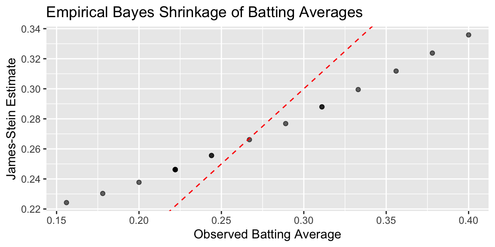
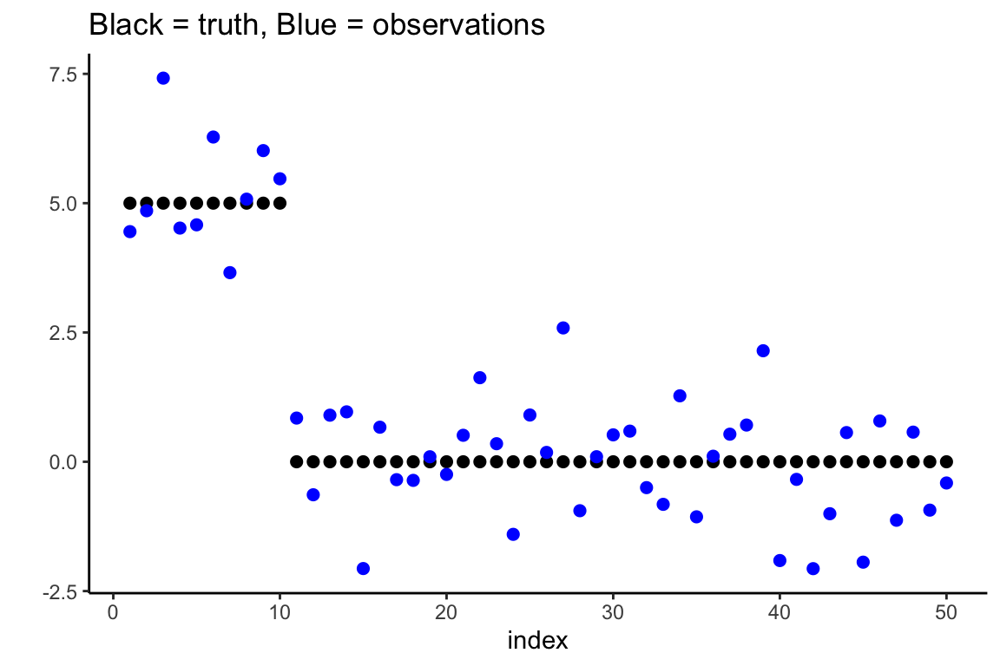

# Data source: https://www1.swarthmore.edu/NatSci/peverso1/Sports%20Data/JamesSteinData/Efron-Morris%20Baseball/EfronMorrisBB.txt
baseball = read.csv("../data/EfronMorrisBB.txt", sep = "\t", stringsAsFactors = FALSE) %>% select(LastName,AtBats,BattingAverage,SeasonAverage)1 Theory of AI: From MLE to Bayesian Regularization
As we have seen in the previous chapters, the development of learning from data algorithms has been driven by two fundamental paradigms: the classical frequentist approach centered around maximum likelihood estimation (MLE) and the Bayesian approach grounded in decision theory. This chapter explores how these seemingly distinct methodologies converge in the modern theory of AI, particularly through the lens of regularization and model selection.
Maximum likelihood estimation represents the cornerstone of classical statistical inference. Given observed data \(\mathcal{D} = \{(x_i, y_i)\}_{i=1}^n\) and a parametric model \(f_{\theta}(x)\), the MLE principle seeks to find the parameter values that maximize the likelihood function: \[ \hat{\theta}_{MLE} = \arg\max_{\theta} \mathcal{L}(\theta; \mathcal{D}) = \arg\max_{\theta} \prod_{i=1}^n p(y_i | x_i, \theta) \]
This approach has several appealing properties: it provides consistent estimators under mild conditions, achieves the Cramér-Rao lower bound asymptotically, and offers a principled framework for parameter estimation. However, MLE has well-documented limitations, particularly in high-dimensional settings MLE can lead to overfitting, poor generalization, and numerical instability. Furthermore, as was shown by Stein’s paradox, MLE can be inadmissible. Meaning, there are other estimators that have lower risk than the MLE. We will start this chapter with the normal means problem and show how MLE can be inadmissible.
1.1 Normal Means Problem
Consider the vector of means case where \(\theta = (\theta_1, \ldots, \theta_p)\). We have \[ y_i \mid \theta_i \sim N(\theta_i, \sigma^2), ~ i=1,\ldots,p > 2 \tag{1.1}\]
The goal is to estimate the vector of means \(\theta = (\theta_1, \ldots, \theta_p)\) and we can achieve this by borrowing strength across the observations. This is also a proxy for non-parametric regression, where \(\theta_i = f(x_i)\). Also typically \(y_i\) is a mean of \(n\) observations, i.e. \(y_i = \frac{1}{n} \sum_{j=1}^n x_{ij}\). Much has been written on the properties of the Bayes risk as a function of \(n\) and \(p\). Much work has also been done on the asymptotic properties of the Bayes risk as \(n\) and \(p\) grow to infinity.
The goal is to estimate the vector \(\theta\) using a squared loss \[ \mathcal{L}(\theta, \hat{\theta}) = \sum_{i=1}^p (\theta_i - \hat{\theta}_i)^2, \] where \(\hat \theta\) is the vector of estimates. Now, we will compare the MLE estimate and what is called the James-Stein estimate. A principled way to evaluate the performance of an estimator is to average its loss over the data, this metric is called the risk. The MLE estimate \(\hat \theta_{i} = y_i\) has a constant risk \(p\) \[ R(\theta,\hat \theta ) = \E[y]{\mathcal{L}\left(\theta, \hat \theta\right) } = p. \] Here expectation is over the data given by distribution Equation 1.1. The estimate is map (rule) from the data to the parameter space \(\hat \theta = \hat \theta(y)\).
Bayesian inference offers a fundamentally different perspective by incorporating prior knowledge and quantifying uncertainty through probability distributions. The Bayesian approach begins with a prior distribution \(p(\theta)\) over the parameter space and updates this belief using Bayes’ rule: \[ p(\theta | y) = \frac{p(y | \theta) p(\theta)}{p(y)} \]
The Bayes estimator is the value \(\hat \theta^{B}\) that minimizes the Bayes risk, the expected loss: \[ \hat \theta^{B} = \arg\min_{\hat \theta(y)} R(\pi, \hat \theta(y)) \] Here \(\pi\) is the prior distribution of \(\theta\) and \(R(\pi, \hat \theta(y))\) is the Bayes risk defined as: \[ R(\pi, \hat{\theta}(y)) = \mathbb{E}_{\theta \sim \pi} \left[ \mathbb{E}_{y\mid \theta} \left[ \mathcal{L}(\theta, \hat{\theta}(y)) \right] \right]. \tag{1.2}\] For squared error loss, this yields the posterior mean \(\E{\theta \mid y}\), while for absolute error loss, it gives the posterior median.
For the normal means problem with squared error loss, this becomes: \[ R(\pi, \hat{\theta}(y)) = \int \left( \int (\theta - \hat{\theta}(y))^2 p(y|\theta) dy \right) \pi(\theta) d\theta \]
The Bayes risk quantifies the expected performance of an estimator, taking into account both the uncertainty in the data and the prior uncertainty about the parameter. It serves as a benchmark for comparing different estimators: an estimator with lower Bayes risk is preferred under the chosen prior and loss function. In particular, the Bayes estimator achieves the minimum possible Bayes risk for the given prior and loss.
In 1961, James and Stein exhibited an estimator of the mean of a multivariate normal distribution that has uniformly lower mean squared error than the sample mean. This estimator is reviewed briefly in an empirical Bayes context. Stein’s rule and its generalizations are then applied to predict baseball averages, to estimate toxomosis prevalence rates, and to estimate the exact size of Pearson’s chi-square test with results from a computer simulation.
In each of these examples, the mean square error of these rules is less than half that of the sample mean. This result is paradoxical because it contradicts the elementary law of statistical theory. The philosophical implications of Stein’s paradox are also significant. It has influenced the development of shrinkage estimators and has connections to Bayesianism and model selection criteria.
The James-Stein estimator is a shrinkage estimator that shrinks the MLE towards the prior mean. The prior mean is typically the sample mean of the data. The James-Stein estimator is given by \[ \hat \theta_{i}^{JS} = (1 - \lambda) \hat \theta_{i}^{MLE} + \lambda \bar y, \] where \(\lambda\) is a shrinkage parameter and \(\bar y\) is the sample mean of the data. The shrinkage parameter is typically chosen to minimize the risk of the estimator.
Following Efron and Morris (1975), we can view the James-Stein estimator through the lens of empirical Bayes methodology. Efron and Morris demonstrate that Stein’s seemingly paradoxical result has a natural interpretation when viewed as an empirical Bayes procedure that estimates the prior distribution from the data itself.
Consider the hierarchical model: \[ \begin{aligned} y_i | \theta_i &\sim N(\theta_i, \sigma^2) \\ \theta_i | \mu, \tau^2 &\sim N(\mu, \tau^2) \end{aligned} \]
The marginal distribution of \(y_i\) is then \(y_i \sim N(\mu, \sigma^2 + \tau^2)\). In the empirical Bayes approach, we estimate the hyperparameters \(\mu\) and \(\tau^2\) from the marginal likelihood:
\[ m(y | \mu, \tau^2) = \prod_{i=1}^p \frac{1}{\sqrt{2\pi(\sigma^2 + \tau^2)}} \exp\left(-\frac{(y_i - \mu)^2}{2(\sigma^2 + \tau^2)}\right) \]
The maximum marginal likelihood estimators are: \[ \hat{\mu} = \bar{y} = \frac{1}{p}\sum_{i=1}^p y_i \] \[ \hat{\tau}^2 = \max\left(0, \frac{1}{p}\sum_{i=1}^p (y_i - \bar{y})^2 - \sigma^2\right) \]
The empirical Bayes estimator then becomes: \[ \hat{\theta}_i^{EB} = \frac{\hat{\tau}^2}{\sigma^2 + \hat{\tau}^2} y_i + \frac{\sigma^2}{\sigma^2 + \hat{\tau}^2} \hat{\mu} \]
This can be rewritten as: \[ \hat{\theta}_i^{EB} = \left(1 - \frac{\sigma^2}{\sigma^2 + \hat{\tau}^2}\right) y_i + \frac{\sigma^2}{\sigma^2 + \hat{\tau}^2} \bar{y} \]
When \(\mu = 0\) and using the estimate \(\hat{\tau}^2 = \max(0, \|y\|^2/p - \sigma^2)\), this reduces to a form closely related to the James-Stein estimator: \[ \hat{\theta}_i^{JS} = \left(1 - \frac{(p-2)\sigma^2}{\|y\|^2}\right) y_i \]
Efron and Morris show that the empirical Bayes interpretation provides insight into why the James-Stein estimator dominates the MLE. The key insight is that the MLE implicitly assumes an improper flat prior \(\pi(\theta) \propto 1\), which leads to poor risk properties in high dimensions.
The risk of the MLE is constant: \[ R(\theta, \hat{\theta}^{MLE}) = \mathbb{E}[\|\hat{\theta}^{MLE} - \theta\|^2] = p\sigma^2 \]
In contrast, the James-Stein estimator has risk: \[ R(\theta, \hat{\theta}^{JS}) = p\sigma^2 - (p-2)\sigma^2 \mathbb{E}\left[\frac{1}{\|\theta + \epsilon\|^2/\sigma^2}\right] \]
where \(\epsilon \sim N(0, \sigma^2 I)\). Since the second term is always positive, we have: \[ R(\theta, \hat{\theta}^{JS}) < R(\theta, \hat{\theta}^{MLE}) \quad \forall \theta \in \mathbb{R}^p, \quad p \geq 3 \]
This uniform domination demonstrates the inadmissibility of the MLE under squared error loss for \(p \geq 3\).
The James-Stein estimator is not the only shrinkage estimator that dominates the MLE. Other shrinkage estimators, such as the ridge regression estimator, also have lower risk than the MLE. The key insight is that shrinkage estimators can leverage prior information to improve estimation accuracy, especially in high-dimensional settings.
Note, that we used the empirical Bayes version of the definition of risk. Full Bayes approach incorporates both the data and the prior distribution of the parameter as in Equation 1.2.
In the normal means problem, the Bayes risk can be explicitly calculated due to the conjugacy of the normal prior and likelihood, and it illustrates how incorporating prior information (via shrinkage) can lead to estimators with lower overall risk compared to the MLE, especially in high-dimensional settings.
From a historical perspective, James-Stein (a.k.a \(L^2\)-regularisation, Stein (1964)) is only a global shrinkage rule–in the sense that there are no local parameters to learn about sparsity. A simple sparsity example shows the issue with \(L^2\)-regularisation. Consider the sparse \(r\)-spike shows the problem with focusing solely on rules with the same shrinkage weight (albeit benefiting from pooling of information).
Let the true parameter value be \(\theta_p = \left ( \sqrt{d/p} , \ldots , \sqrt{d/p} , 0 , \ldots , 0 \right )\). James-Stein is equivalent to the model \[ y_i = \theta_i + \epsilon_i \; \mathrm{ and} \; \theta_i \sim \mathcal{N} \left ( 0 , \tau^2 \right ) \]
A better approach to address sparsity is to use a local shrinkage estimator, such as the horseshoe prior. The horseshoe prior is particularly effective for sparse signals, as it allows for strong shrinkage of noise while preserving signals.
The horseshoe prior is defined as: \[ \theta_i \sim N(0, \sigma^2 \tau^2 \lambda_i^2), \quad \lambda_i \sim C^+(0, 1), \quad \tau \sim C^+(0, 1) \]
Here, \(\lambda_i\) is a local shrinkage parameter, and \(\tau\) is a global shrinkage parameter. The half-Cauchy distribution \(C^+\) ensures heavy tails, allowing for adaptive shrinkage. We will discuss the horseshoe prior in more detail later in this section.
Example 1.1 (Example: James-Stein for Baseball Batting Averages) We reproduce the baseball batting average example from Efron and Morris (1977). Data below has the number of hits for 18 baseball player after 45 at-beat in 1970 season
Now, we can eatimate overall mean and variance
mu_hat <- mean(baseball$BattingAverage)
sigma2_hat <- var(baseball$BattingAverage)As well as the posterior mean for each player (James-Stein estimator)
baseball <- baseball %>%
mutate(
JS = (sigma2_hat / (sigma2_hat + (BattingAverage * (1 - BattingAverage) / AtBats))) * mu_hat +
((BattingAverage * (1 - BattingAverage) / AtBats) / (sigma2_hat + (BattingAverage * (1 - BattingAverage) / AtBats))) * BattingAverage
)
kable(baseball)| LastName | AtBats | BattingAverage | SeasonAverage | JS |
|---|---|---|---|---|
| Clemente | 45 | 0.40 | 0.35 | 0.34 |
| Robinson | 45 | 0.38 | 0.31 | 0.32 |
| Howard | 45 | 0.36 | 0.28 | 0.31 |
| Johnstone | 45 | 0.33 | 0.24 | 0.30 |
| Berry | 45 | 0.31 | 0.28 | 0.29 |
| Spencer | 45 | 0.31 | 0.27 | 0.29 |
| Kessinger | 45 | 0.29 | 0.27 | 0.28 |
| Alvarado | 45 | 0.27 | 0.22 | 0.27 |
| Santo | 45 | 0.24 | 0.27 | 0.26 |
| Swaboda | 45 | 0.24 | 0.23 | 0.26 |
| Petrocelli | 45 | 0.22 | 0.26 | 0.25 |
| Rodriguez | 45 | 0.22 | 0.22 | 0.25 |
| Scott | 45 | 0.22 | 0.30 | 0.25 |
| Unser | 45 | 0.22 | 0.26 | 0.25 |
| Williams | 45 | 0.22 | 0.25 | 0.25 |
| Campaneris | 45 | 0.20 | 0.28 | 0.24 |
| Munson | 45 | 0.18 | 0.30 | 0.23 |
| Alvis | 45 | 0.16 | 0.18 | 0.22 |
Plot below shows the observed averages vs. James-Stein estimate
ggplot(baseball, aes(x = BattingAverage, y = JS)) +
geom_point(alpha = 0.6) +
geom_abline(slope = 1, intercept = 0, linetype = "dashed", color = "red") +
labs(
x = "Observed Batting Average",
y = "James-Stein Estimate",
title = "Empirical Bayes Shrinkage of Batting Averages"
)
Calculate mean squared error (MSE) for observed and James-Stein estimates
mse_observed <- mean((baseball$BattingAverage - mu_hat)^2)
mse_js <- mean((baseball$JS - mu_hat)^2)
cat(sprintf("MSE (Observed): %.6f\n", mse_observed))## MSE (Observed): 0.004584cat(sprintf("MSE (James-Stein): %.6f\n", mse_js))## MSE (James-Stein): 0.001031We can see that the James-Stein estimator has a lower MSE than the observed batting averages. This is a demonstration of Stein’s paradox, where the James-Stein estimator, which shrinks the estimates towards the overall mean, performs better than the naive sample mean estimator.
a = matrix(rep(1:3, nrow(baseball)), 3, nrow(baseball))
b = matrix(c(baseball$BattingAverage, baseball$SeasonAverage, baseball$JS), 3, nrow(baseball), byrow=TRUE)
matplot(a, b, pch=" ", ylab="predicted average", xaxt="n", xlim=c(0.5, 3.1), ylim=c(0.13, 0.42))
matlines(a, b)
text(rep(0.7, nrow(baseball)), baseball$BattingAverage, baseball$LastName, cex=0.6)
text(1, 0.14, "First 45\nat bats", cex=0.5)
text(2, 0.14, "Average\nof remainder", cex=0.5)
text(3, 0.14, "J-S\nestimator", cex=0.5)
Now if we look at the season dynamics for Clemente
# Data source: https://www.baseball-almanac.com/players/hittinglogs.php?p=clemero01&y=1970
cl = read.csv("../data/clemente.csv")
x = cumsum(cl$AB)
y = cumsum(cl$H)/cumsum(cl$AB)
# Plot x,y startind from index 2
ind = c(1,2)
plot(x[-ind],y[-ind], type='o', ylab="Betting Average", xlab="Number at Bats")
# Add horizontal line for season average 145/412 and add text above line `Seaosn Average`
text(200, 145/412 + 0.005, "Season Average", col = "red")
abline(h = 145/412, col = "red", lty = 2)
# Ted williams record is .406 in in 1941, so you know the first data points are noise
text(200, baseball$JS[1] + 0.005, "JS", col = "red")
abline(h = baseball$JS[1], col = "red", lty = 2)
text(200, baseball$BattingAverage[1] + 0.005, "After 45 Bets", col = "red")
abline(h = baseball$BattingAverage[1], col = "red", lty = 2)
The motivation for the shrinkage prior rather than a flat uniform prior are the following probabilistic arguments. They have an ability to balance signal detection and noise suppression in high-dimensional settings. Unlike flat uniform priors, shrinkage priors adaptively shrink small signals towards zero while preserving large signals. This behavior is crucial for sparse estimation problems, where most parameters are expected to be zero or near-zero. The James-Stein procedure is an example of global shrinkage, when the overall sparsity level across all parameters is controlled, ensuring that the majority of parameters are shrunk towards zero. Later in this section we will discuss local shrinkage priors, such as the horseshoe prior, which allow individual parameters to escape shrinkage if they represent significant signals.
In summary, flat uniform priors (MLE) fail to provide adequate regularization in high-dimensional settings, leading to poor risk properties and overfitting. By incorporating probabilistic arguments and hierarchical structures, shrinkage priors offer a principled approach to regularization that aligns with Bayesian decision theory and modern statistical practice.
1.2 Maximum Aposteriori Estimation (MAP) and Regularization
In the previous sections, we have seen how the Bayesian approach provides a principled framework for parameter estimation through the use of prior distributions and the minimization of Bayes risk. However, in many practical scenarios, we may not have access to a full Bayesian model or the computational resources to perform Bayesian inference. This is where the concept of MAP or regularization comes into play. It also sometimes called a poor man’s Bayesian approach.
Given input-output pairs \((x_i,y_i)\), MAP learns the funvtion \(f\) that maps inputs \(x_i\) to outputs \(y_i\) by minimizing \[ \sum_{i=1}^N \mathcal{L}(y_i,f(x_i)) + \lambda \phi(f) \rightarrow \text{minimize}_{f}. \] The first term is the loss function that measures the difference between the predicted output \(f(x_i)\) and the true output \(y_i\). The second term is a regularization term that penalizes complex functions \(f\) to prevent overfitting. The parameter \(\lambda\) controls the trade-off between fitting the data well and keeping the function simple. In the case when \(f\) is a parametric model, then we simply replace \(f\) with the parameters \(\theta\) of the model, and the regularization term becomes a penalty on the parameters.
The loss is simply a negative log-likelihood from a probabilistic model specified for the data generating process. For example, when \(y\) is numeric and \(y_i \mid x_i \sim N(f(x_i),\sigma^2)\), we get the squared loss \(\mathcal{L}(y,f(x)) = (y-f(x))^2\). When \(y_i\in \{0,1\}\) is binary, we use the logistic loss \(\mathcal{L}(y,f(x)) = \log(1+\exp(-yf(x)))\).
The penalty term \(\lambda \phi(f)\) discourages complex functions \(f\). Then, we can think of regularization as a technique to incorporate some prior knowledge about parameters of the model into the estimation process. Consider an example when regularization allows us to solve a hard problem of filtering noisy traffic data.
Example 1.2 (Traffic) Consider traffic flow speed measured by an in-ground sensor installed on interstate I-55 near Chicago. Speed measurements are noisy and prone to have outliers. Figure 1.1 shows speed measured data, averaged over five minute intervals on one of the weekdays.

The statistical model is \[ y_t = f_t + \epsilon_t, ~ \epsilon_t \sim N(0,\sigma^2), ~ t=1,\ldots,n, \] where \(y_t\) is the speed measurement at time \(t\), \(f_t\) is the true underlying speed at time \(t\), and \(\epsilon_t\) is the measurement noise. There are two sources of noise. The first is the measurement noise, caused by inhalant nature of the sensor’s hardware. The second source is due to sampling error, vehicles observed on a specific lane where senor installed might not represent well traffic in other lanes. A naive MLE approach woule be to estimate the speed profile \(f = (f_1, \ldots, f_n)\) by minimizing the squared loss \[ \hat f = \arg\min_{f} \sum_{t=1}^{n} (y_t - f_t)^2. \] However, the minima of this loss function is 0 and corresponds to the case when \(\hat f_t = y_t\) for all \(t\). We have learned nothing about the speed profile, and the estimate is simply the noisy observation \(y_t\). In this case, we have no way to distinguish between the true speed profile and the noise.
However, we can use regularization and bring some prior knowledge about traffic speed profiles to improve the estimate of the speed profile and to remove the noise.
Specifically, we will use a trend filtering approach. Under this approach, we assume that the speed profile \(f\) is a piece-wise linear function of time, and we want to find a function that captures the underlying trend while ignoring the noise. The regularization term \(\phi(f)\) is then the second difference of the speed profile, \[ \lambda \sum_{t=1}^{n-1}|f_{t-1} - 2f_t + f_{t+1}| \] which penalizes the “kinks” in the speed profile. The value of this penalty is zero, when \(f_{t-1}, f_t, f_{t+1}\) lie on a straight line, and it increases when the speed profile has a kink. The parameter \(\lambda\) is a regularization parameter that controls the strength of the penalty.
Trend filtering penalized function is then \[ (1/2) \sum_{t=1}^{n}(y_t - f_t)^2 + \lambda \sum_{t=1}^{n-1}|f_{t-1} - 2f_t + f_{t+1}|, \] which is a variation of a well-know Hodrick-Prescott filter.
This approach requires us to choose the regularization parameter \(\lambda\). A small value of \(\lambda\) will lead to a function that fits the data well, but may not capture the underlying trend. A large value of \(\lambda\) will lead to a function that captures the underlying trend, but may not fit the data well. The optimal value of \(\lambda\) can be chosen using cross-validation or other model selection techniques. The left panel of ?fig-traffic shows the trend filtering for different values of \(\lambda \in \{5,50,500\}\). The right panel shows the optimal value of \(\lambda\) chosen by cross-validation (by visual inspection).


-
Trend Filtering for Traffic Speed Data
There is a duality between using regularization term in optimisation problem and assuming a prior distribution over the parameters of the model \(f\). Given the likelihood \(L(y_i,f(x_i))\), the posterior is given by Bayes’ rule: \[ p(f \mid y_i, x_i) = \frac{\prod_{i=1}^n L(y_i,f(x_i)) p(f)}{p(y_i \mid x_i)}. \] If we take the negative log of this posterior, we get: \[ -\log p(f \mid y_i, x_i) = - \sum_{i=1}^n \log L(y_i,f(x_i)) - \log p(f) + \log p(y_i \mid x_i). \] Since loss is the negative log-likelihood \(-\log L(y_i,f(x_i)) = \mathcal{L}(y_i,f(x_i))\), the posterior maximization is equivalent to minimizing the following regularized loss function: \[ \sum_{i=1}^n \mathcal{L}(y_i,f(x_i)) + \log p(f). \] The last term \(\log p(y_i \mid x_i)\) does not depend on \(f\) and can be ignored in the optimization problem. Thus, the equivalence is given by: \[ \lambda \phi(f) = -\log p(f), \] where \(\phi(f)\) is the penalty term that corresponds to the prior distribution of \(f\). Below we will consider several choices for the prior distribution of \(f\) and the corresponding penalty term \(\phi(f)\) commonly used in practice.
1.3 Ridge Regression
The ridge regression uses a gaussian prior on the parameters of the model \(f\), which leads to a squared penalty term. Specifically, we assume that the parameters \(\beta\) of the model \(f(x) = x^T\beta\) are distributed as: \[ \beta \sim N(0, \sigma^2 I), \] where \(I\) is the identity matrix. The prior distribution of \(\beta\) is a multivariate normal distribution with mean 0 and covariance \(\sigma^2 I\). The negative log of this prior distribution is given by: \[ -\log p(\beta) = \frac{1}{2\sigma^2} \|\beta||_2^2 + \text{const}, \] where \(\|\beta||_2^2 = \sum_{j=1}^p \beta_j^2\) is the squared 2-norm of the vector \(\beta\). The regularization term \(\phi(f)\) is then given by: \[ \phi(f) = \frac{1}{2\sigma^2} \|\beta||_2^2. \] This leads to the following optimization problem: \[ \underset{\beta}{\mathrm{minimize}}\quad ||y- X\beta||_2^2 + \lambda ||\beta||_2^2, \] where \(\lambda = 1/\sigma^2\) is the regularization parameter that controls the strength of the prior. The solution to this optimization problem is given by: \[ \hat{\beta}_{\text{ridge}} = ( X^T X + \lambda I )^{-1} X^T y. \] The regularization parameter \(\lambda\) is related to the variance of the prior distribution. When \(\lambda=0\), the function \(f\) is the maximum likelihood estimate of the parameters. When \(\lambda\) is large, the function \(f\) is the prior mean of the parameters. When \(\lambda\) is infinite, the function \(f\) is the prior mode of the parameters.
Notice, that the OLS estimate (invented by Gauss) is a special case of ridge regression when \(\lambda = 0\): \[ \hat{\beta}_{\text{OLS}} = ( X^T X )^{-1} X^T y. \]
The original motivation for ridge regularisation was to address the problem of numerical instability in the OLS solution when the design matrix \(X\) is ill-conditioned, i.e. when \(X^T X\) is close to singular. In this case, the OLS solution can be very sensitive to small perturbations in the data, leading to large variations in the estimated coefficients \(\hat{\beta}\). This is particularly problematic when the number of features \(p\) is large, as the condition number of \(X^T X\) can grow rapidly with \(p\). The ridge regression solution stabilizes the OLS solution by adding a small positive constant \(\lambda\) to the diagonal of the \(X^T X\) matrix, which improves the condition number and makes the solution more robust to noise in the data. The additional term \(\lambda I\) simply shifts the eigenvalues of \(X^T X\) away from zero, thus improving the numerical stability of the inversion.
Another way to think and write the objective function of Ridge as the following constrained optimization problem: \[ \underset{\beta}{\mathrm{minimize}}\quad ||y- X\beta||_2^2 \quad \text{subject to} \quad ||\beta||_2^2 \leq t, \] where \(t\) is a positive constant that controls the size of the coefficients \(\beta\). This formulation emphasizes the idea that ridge regression is a form of regularization that constrains the size of the coefficients, preventing them from growing too large and leading to overfitting. The constraint \(||\beta||_2^2 \leq t\) can be interpreted as a budget on the size of the coefficients, where larger values of \(t\) allow for larger coefficients and more complex models.
Constraint on the model parameters (and the original Ridge estimator) was proposed by Tikhonov et al. (1943) for solving inverse problems to “discover” physical laws from observations. The norm of the \(\beta\) vector would usually represent amount of energy required. Many processes in nature are energy minimizing!
Again, the tuning parameter \(\lambda\) controls trade-off between how well model fits the data and how small \(\beta\)s are. Different values of \(\lambda\) will lead to different models. We select \(\lambda\) using cross validation.
Example 1.3 (Shrinkage) Consider a simulated data with \(n=50\), \(p=30\), and \(\sigma^2=1\). The true model is linear with \(10\) large coefficients between \(0.5\) and \(1\).
Our approximators \(\hat f_{\beta}\) is a linear regression. We can empirically calculate the bias by calculating the empirical squared loss \(1/n||y -\hat y||_2^2\) and variance can be empirically calculated as \(1/n\sum (\bar{\hat{y}} - \hat y_i)\)
Bias squared \(\mathrm{Bias}(\hat{y})^2=0.006\) and variance \(\Var{\hat{y}} =0.627\). Thus, the prediction error = \(1 + 0.006 + 0.627 = 1.633\)
We’ll do better by shrinking the coefficients to reduce the variance. Let’s estimate, how big a gain will we get with Ridge?

Now we see the accuracy of the model as a function of \(\lambda\)

Ridge Regression At best: Bias squared \(=0.077\) and variance \(=0.402\).
Prediction error = \(1 + 0.077 + 0.403 = 1.48\)

1.3.1 Kernel View of Ridge Regression
Another interesting view stems from what is called the push-through matrix identity: \[ (aI + UV)^{-1}U = U(aI + VU)^{-1} \] for \(a\), \(U\), \(V\) such that the products are well-defined and the inverses exist. We can obtain this from \(U(aI + VU) = (aI + UV)U\), followed by multiplication by \((aI + UV)^{-1}\) on the left and the right. Applying the identity above to the ridge regression solution with \(a = \lambda\), \(U = X^T\), and \(V = X\), we obtain an alternative form for the ridge solution: \[ \hat{\beta} = X^T (XX^T + \lambda I)^{-1} Y. \] This is often referred to as the kernel form of the ridge estimator. From this, we can see that the ridge fit can be expressed as \[ X\hat{\beta} = XX^T (XX^T + \lambda I)^{-1} Y. \] What does this remind you of? This is precisely \(K(K + \lambda I)^{-1}Y\) where \(K = XX^T\), which, recall, is the fit from RKHS regression with a linear kernel \(k(x, z) = x^T z\). Therefore, we can think of RKHS regression as generalizing ridge regression by replacing the standard linear inner product with a general kernel. (Indeed, RKHS regression is often called kernel ridge regression.) \[ (aI + UV)^{-1}U = U(aI + VU)^{-1} \] for \(a\), \(U\), \(V\) such that the products are well-defined and the inverses exist. We can obtain this from \(U(aI + VU) = (aI + UV)U\), followed by multiplication by \((aI + UV)^{-1}\) on the left and the right. Applying the identity above to the ridge regression solution with \(a = \lambda\), \(U = X^T\), and \(V = X\), we obtain an alternative form for the ridge solution: \[ \hat{\beta} = X^T (XX^T + \lambda I)^{-1} Y. \] This is often referred to as the kernel form of the ridge estimator. From this, we can see that the ridge fit can be expressed as \[ X\hat{\beta} = XX^T (XX^T + \lambda I)^{-1} Y. \] What does this remind you of? This is precisely \(K(K + \lambda I)^{-1}Y\) where \(K = XX^T\), which, recall, is the fit from RKHS regression with a linear kernel \(k(x, z) = x^T z\). Therefore, we can think of RKHS regression as generalizing ridge regression by replacing the standard linear inner product with a general kernel. (Indeed, RKHS regression is often called kernel ridge regression.)
1.4 Lasso Regression
The Lasso (Least Absolute Shrinkage and Selection Operator) regression uses a Laplace prior on the parameters of the model \(f\), which leads to an \(\ell_1\) penalty term. Specifically, we assume that the parameters \(\beta\) of the model \(f(x) = x^T\beta\) are distributed as: \[ \beta_j \sim \text{Laplace}(0, b) \quad \text{independently for } j = 1, \ldots, p, \] where \(b > 0\) is the scale parameter. The Laplace distribution has the probability density function: \[ p(\beta_j \mid b) = \frac{1}{2b}\exp\left(-\frac{|\beta_j|}{b}\right). \] The negative log of this prior distribution is given by: \[ -\log p(\beta) = \frac{1}{b} \|\beta\|_1 + \text{const}, \] where \(\|\beta\|_1 = \sum_{j=1}^p |\beta_j|\) is the \(\ell_1\)-norm of the vector \(\beta\). The regularization term \(\phi(f)\) is then given by: \[ \phi(f) = \frac{1}{b} \|\beta\|_1. \] This leads to the following optimization problem: \[ \underset{\beta}{\mathrm{minimize}}\quad \|y- X\beta\|_2^2 + \lambda \|\beta\|_1, \] where \(\lambda = 2\sigma^2/b\) is the regularization parameter that controls the strength of the prior. Unlike ridge regression, the Lasso optimization problem does not have a closed-form solution due to the non-differentiable nature of the \(\ell_1\) penalty. However, efficient algorithms such as coordinate descent and proximal gradient methods can be used to solve it.
The key distinguishing feature of Lasso is its ability to perform automatic variable selection. The \(\ell_1\) penalty encourages sparsity in the coefficient vector \(\hat{\beta}\), meaning that many coefficients will be exactly zero. This property makes Lasso particularly useful for high-dimensional problems where feature selection is important.
When \(\lambda=0\), the Lasso reduces to the ordinary least squares (OLS) estimate. As \(\lambda\) increases, more coefficients are driven to exactly zero, resulting in a sparser model. When \(\lambda\) is very large, all coefficients become zero.
The geometric intuition behind Lasso’s sparsity-inducing property comes from the constraint formulation. We can write the Lasso problem as: \[ \underset{\beta}{\mathrm{minimize}}\quad \|y- X\beta\|_2^2 \quad \text{subject to} \quad \|\beta\|_1 \leq t, \] where \(t\) is a positive constant that controls the sparsity of the solution. The constraint region \(\|\beta\|_1 \leq t\) forms a diamond (in 2D) or rhombus-shaped region with sharp corners at the coordinate axes. The optimal solution often occurs at these corners, where some coefficients are exactly zero.
From a Bayesian perspective, the Lasso estimator corresponds to the maximum a posteriori (MAP) estimate under independent Laplace priors on the coefficients. We use Bayes rule to calculate the posterior as a product of Normal likelihood and Laplace prior: \[ \log p(\beta \mid y, b) \propto -\|y-X\beta\|_2^2 - \frac{2\sigma^2}{b}\|\beta\|_1. \] For fixed \(\sigma^2\) and \(b>0\), the posterior mode is equivalent to the Lasso estimate with \(\lambda = 2\sigma^2/b\). Large variance \(b\) of the prior is equivalent to small penalty weight \(\lambda\) in the Lasso objective function.
One of the most popular algorithms for solving the Lasso problem is coordinate descent. The algorithm iteratively updates each coefficient while holding all others fixed. For the \(j\)-th coefficient, the update rule is: \[ \hat{\beta}_j \leftarrow \text{soft}\left(\frac{1}{n}\sum_{i=1}^n x_{ij}(y_i - \sum_{k \neq j} x_{ik}\hat{\beta}_k), \frac{\lambda}{n}\right), \] where the soft-thresholding operator is defined as: \[ \text{soft}(z, \gamma) = \text{sign}(z)(|z| - \gamma)_+ = \begin{cases} z - \gamma & \text{if } z > \gamma \\ 0 & \text{if } |z| \leq \gamma \\ z + \gamma & \text{if } z < -\gamma \end{cases} \]
Example 1.6 (Sparsity and Variable Selection)
# Generate simulated data
set.seed(123)
n <- 100 # number of observations
p <- 20 # number of predictors
sigma <- 1 # noise level
# Create design matrix with some correlation structure
X <- matrix(rnorm(n * p), n, p)
# Add some correlation between predictors
for(i in 2:p) {
X[, i] <- 0.5 * X[, i-1] + sqrt(0.75) * X[, i]
}
# True coefficients - sparse signal
beta_true <- c(3, -2, 1.5, 0, 0, 2, 0, 0, 0, -1, rep(0, 10))
sparse_indices <- which(beta_true != 0)
# Generate response
y <- X %*% beta_true + sigma * rnorm(n)
# Fit LASSO path using glmnet
library(glmnet)
lasso_fit <- glmnet(X, y, alpha = 1)
# Plot coefficient paths
plot(lasso_fit, xvar = "lambda", label = TRUE)
title("LASSO Coefficient Paths")
# Cross-validation to select optimal lambda
cv_lasso <- cv.glmnet(X, y, alpha = 1, nfolds = 10)
# Plot cross-validation curve
plot(cv_lasso)
title("Cross-Validation for LASSO")
# Extract coefficients at optimal lambda
lambda_min <- cv_lasso$lambda.min
lambda_1se <- cv_lasso$lambda.1se
coef_min <- coef(lasso_fit, s = lambda_min)
coef_1se <- coef(lasso_fit, s = lambda_1se)
# Compare estimates with true values
comparison <- data.frame(
True = c(0, beta_true), # Include intercept
LASSO_min = as.vector(coef_min),
LASSO_1se = as.vector(coef_1se)
)
rownames(comparison) <- c("Intercept", paste0("X", 1:p))
# Print comparison table
kable(round(comparison, 3), caption = "Comparison of True and Estimated Coefficients")| True | LASSO_min | LASSO_1se | |
|---|---|---|---|
| Intercept | 0.0 | -0.12 | -0.07 |
| X1 | 3.0 | 2.92 | 2.67 |
| X2 | -2.0 | -2.11 | -1.79 |
| X3 | 1.5 | 1.66 | 1.42 |
| X4 | 0.0 | 0.00 | 0.00 |
| X5 | 0.0 | 0.01 | 0.01 |
| X6 | 2.0 | 1.97 | 1.83 |
| X7 | 0.0 | 0.06 | 0.00 |
| X8 | 0.0 | -0.10 | 0.00 |
| X9 | 0.0 | -0.04 | -0.03 |
| X10 | -1.0 | -1.02 | -0.87 |
| X11 | 0.0 | 0.12 | 0.00 |
| X12 | 0.0 | 0.07 | 0.00 |
| X13 | 0.0 | -0.11 | 0.00 |
| X14 | 0.0 | 0.00 | 0.00 |
| X15 | 0.0 | 0.04 | 0.00 |
| X16 | 0.0 | 0.00 | 0.00 |
| X17 | 0.0 | 0.00 | 0.00 |
| X18 | 0.0 | -0.03 | 0.00 |
| X19 | 0.0 | 0.07 | 0.00 |
| X20 | 0.0 | -0.13 | 0.00 |
# Visualization of coefficient estimates
library(reshape2)
library(ggplot2)
# Melt data for plotting
plot_data <- melt(comparison, id.vars = NULL)
plot_data$Variable <- rep(rownames(comparison), 3)
plot_data$Variable <- factor(plot_data$Variable, levels = rownames(comparison))
ggplot(plot_data, aes(x = Variable, y = value, fill = variable)) +
geom_bar(stat = "identity", position = "dodge") +
theme_minimal() +
theme(axis.text.x = element_text(angle = 45, hjust = 1)) +
labs(title = "Coefficient Estimates Comparison",
y = "Coefficient Value",
fill = "Method") +
scale_fill_brewer(type = "qual", palette = "Set2")
# Calculate prediction errors
pred_min <- predict(lasso_fit, newx = X, s = lambda_min)
pred_1se <- predict(lasso_fit, newx = X, s = lambda_1se)
mse_min <- mean((y - pred_min)^2)
mse_1se <- mean((y - pred_1se)^2)
cat("Mean Squared Error (lambda.min):", round(mse_min, 3), "\n")## Mean Squared Error (lambda.min): 0.68cat("Mean Squared Error (lambda.1se):", round(mse_1se, 3), "\n")## Mean Squared Error (lambda.1se): 0.85# Variable selection performance
selected_min <- which(coef_min[-1] != 0) # Exclude intercept
selected_1se <- which(coef_1se[-1] != 0) # Exclude intercept
cat("\nTrue non-zero coefficients:", sparse_indices, "\n")##
## True non-zero coefficients: 1 2 3 6 10cat("Selected by LASSO (lambda.min):", selected_min, "\n")## Selected by LASSO (lambda.min): 1 2 3 5 6 7 8 9 10 11 12 13 15 18 19 20cat("Selected by LASSO (lambda.1se):", selected_1se, "\n")## Selected by LASSO (lambda.1se): 1 2 3 5 6 9 10# Calculate selection metrics
true_positives_min <- length(intersect(sparse_indices, selected_min))
false_positives_min <- length(setdiff(selected_min, sparse_indices))
false_negatives_min <- length(setdiff(sparse_indices, selected_min))
precision_min <- true_positives_min / max(1, length(selected_min))
recall_min <- true_positives_min / length(sparse_indices)
cat("\nSelection Performance (lambda.min):\n")##
## Selection Performance (lambda.min):cat("Precision:", round(precision_min, 3), "\n")## Precision: 0.31cat("Recall:", round(recall_min, 3), "\n")## Recall: 1The coefficient paths plot shows how LASSO coefficients shrink toward zero as the regularization parameter lambda increases. The colored lines represent different predictors, demonstrating LASSO’s variable selection property. The cross-validation plot reveals the bias-variance tradeoff: - lambda.min gives the minimum CV error (best predictive performance) - lambda.1se provides a more parsimonious model (within 1 SE of minimum) Performance metrics show LASSO’s effectiveness: - High precision and recall indicate successful variable selection - Lower MSE compared to unregularized models demonstrates regularization benefits - The comparison table reveals LASSO correctly identifies most true signals while setting noise variables to zero The coefficient estimates visualization clearly shows: - True coefficients (ground truth) - LASSO estimates at different lambda values - How regularization affects both signal preservation and noise suppression Key insights: 1. LASSO successfully performs automatic variable selection 2. The method balances model complexity with predictive accuracy 3. Cross-validation provides principled selection of regularization strength 4. Results demonstrate the practical value of sparsity-inducing priors ::
1.4.1 Scale Mixture Representation
The Laplace distribution can be represented as a scale mixture of Normal distributions (Andrews and Mallows 1974): \[ \begin{aligned} \beta_j \mid \sigma^2,\tau_j &\sim N(0,\tau_j^2\sigma^2)\\ \tau_j^2 \mid \alpha &\sim \text{Exp}(\alpha^2/2)\\ \sigma^2 &\sim \pi(\sigma^2). \end{aligned} \] We can show equivalence by integrating out \(\tau_j\): \[ p(\beta_j\mid \sigma^2,\alpha) = \int_{0}^{\infty} \frac{1}{\sqrt{2\pi \tau_j\sigma^2}}\exp\left(-\frac{\beta_j^2}{2\sigma^2\tau_j^2}\right)\frac{\alpha^2}{2}\exp\left(-\frac{\alpha^2\tau_j^2}{2}\right)d\tau_j = \frac{\alpha}{2\sigma}\exp\left(-\frac{\alpha|\beta_j|}{\sigma}\right). \] This representation allows for efficient Gibbs sampling algorithms that can automatically tune the regularization parameter through the hierarchical Bayesian framework.
1.5 Penalty and Regularisation
The problem of finding a good model boils down to finding \(\phi\) that minimize some form of Bayes risk for the problem at hand.
There are a number of commonly used penalty functions (a.k.a. log prior density). For example, the $ l^2$-norm corresponds to s normal prior. The resulting Bayes rule will take the form of a shrinkage estimator, a weighted combination between data and prior beliefs about the parameter. An $ l^1 $-norm will induce a sparse solution in the estimator and can be used an a variable selection operator. The $ l_0 $-norm directly induces a subset selection procedure.
The amount of regularisation \(\lambda\) gauges the trade-off between the compromise between the observed data and the initial prior beliefs.
There are two main approaches to finding a good model:
- Full Bayes: This approach places a prior distribution on the parameters and computes the full posterior distribution.
- Regularization Methods: These approaches add penalty terms to the objective function to control model complexity.
Now, let’s look at those two approaches in more detail.
The full Bayes approach is to place a prior distribution on the parameters and compute the full posterior distribution using the Bayes rule: \[ p( \theta | y ) = \frac{ f( y | \theta ) p( \theta ) }{ m(y) }, \] here \[ m(y) = \int f( y| \theta ) p( \theta ) d \theta \] Here \(m(y)\) is the marginal beliefs about the data. This can also be used to choose the amount of regularisation via the type II maximum likelihood estimator (MMLE) defined by \[ \hat{\tau} = \arg \max \log m( y | \tau ) \] where again $ m( y | ) = f( y | ) p( | ) $.
For example, in the normal-normal model, with \(\mu=0\), we can integrate out the high dimensional \(\theta\) and find \(m(y | \tau)\) in closed form as \(y_i \sim N(0, \sigma^2 + \tau^2)\) \[ m( y | \tau ) = ( 2 \pi)^{-n/2} ( \sigma^2 + \tau^2 )^{- n/2} \exp \left ( - \frac{ \sum y_i^2 }{ 2 ( \sigma^2 + \tau^2) } \] The original JS estimator shrinks to zero and estimates prior variance using empirical Bayes (marginal MLE or Type II MLE). Efron and Morris and Lindley showed that you want o shrink to overall mean \(\bar y\) and in this approach \[ \theta \sim N(\mu,\tau^2). \] The original JS is \(\mu=0\). To estimate the \(\mu\) and \(\tau\) you can do full Bayes or empirical Bayes that shrinks to overall grand mean \(\bar y\), which serves as the estimate of the original prior mean \(\mu\). It seems paradoxical that you estimate proper from the data. However, this is not the case. You simply use mixture prior Diaconis and Ylvisaker (1983) with marginal MLE (MMLE). The MMLE is the product \[ \int_{\theta_i}\prod_{i=1}^k p(\bar y_i \mid \theta_i)p(\theta_i \mid \mu, \tau^2). \]
Common examples include ridge regression (L2 penalty), lasso regression (L1 penalty), and elastic net (combination of L1 and L2 penalties).
Rather than having to perform high dimensional integration with the likes of MCMC etc, a common approach is to use a maximum a posteriori (MAP) estimator defined by \[ \hat{\theta} = \arg \max \log p ( \theta | y ) \] This can directly lead to sparsity as in the case of \(\ell_1\)-norm optimisation.
1.6 \(\ell_2\) Shrinkage.
The original JS estimator shranks to zero and estimates prior variance using empirical Bayes (marginal MLE or Type II MLE). Efron and Morris and Lindley showed that you want o shrink to overall mean \(\bar y\) and in this approach \[ \theta \sim N(\mu,\tau^2). \] The original JS uses \(\mu=0\). To estimate the \(\mu\) and \(\tau\) you can do full Bayes or empirical Bayes that shrinks to overall grand mean \(\bar y\), which serves as the estimate of the original prior mean \(\mu\). It seems paradoxical that you estimate proper prior from the data. However, this is not the case. You simply use mixture prior Diaconis and Ylvisaker (1983) with marginal MLE (MMLE). The MMLE is the product \[ \int_{\theta_i}\prod_{i=1}^k p(\bar y_i \mid \theta_i)p(\theta_i \mid \mu, \tau^2). \]
1.6.1 Sparse \(r\)-spike problem
For the sparse \(r\)-spike problem we require a different rule. For a sparse signal, however, \(\hat \theta_{JS}\) performs poorly when the true parameter is an \(r\)-spike where \(\theta_r\) has \(r\) coordinates at \(\sqrt{p/r}\) and the rest set at zero with norm \({\Vert \theta_r \Vert}^2 =p\).
The classical risk satisfies \(R \left ( \hat \theta_{JS} , \theta_r \right ) \geq p/2\) where the simple thresholding rule \(\sqrt{2 \ln p}\) performs with risk \(\sqrt{\ln p}\) in the \(r\)-spike sparse case even though it is inadmissible in MSE for a non-sparse signal. Then is due to the fact that for \(\theta_p\) we have \[ \frac{p \Vert \theta \Vert^2}{p + \Vert \theta \Vert^2} \leq R \left ( \hat{\theta}^{JS} , \theta_p \right ) \leq 2 + \frac{p \Vert \theta \Vert^2}{ d + \Vert \theta \Vert^2}. \] This implies that \(R \left ( \hat{\theta}^{JS} , \theta_p \right ) \geq (p/2)\). Hence, simple thresholding rule beats James-Stein this with a risk given by \(\sqrt{\log p }\). This simple example, shows that the choice of penalty should not be taken for granted as different estimators will have different risk profiles.
A Bayes rule that inherits good MSE properties but also simultaneously provides asymptotic minimax estimation risk for sparse signals. HS estimator uniformly dominates the traditional sample mean estimator in MSE and has good posterior concentration properties for nearly black objects. Specifically, the horseshoe estimator attains asymptotically minimax risk rate \[ \sup_{ \theta \in l_0[p_n] } \; \mathbb{E}_{ y | \theta } \|\hat y_{hs} - \theta \|^2 \asymp p_n \log \left ( n / p_n \right ). \] The “worst’’ \(\theta\) is obtained at the maximum difference between \(\left| \hat \theta_{HS} - y \right|\) where \(\hat \theta_{HS} = \mathbb{E}(\theta|y)\) can be interpreted as a Bayes posterior mean (optimal under Bayes MSE).
One such estimator that achieves the optimal minimax rate is the horseshoe estimator proposed by Carvalho, Polson, and Scott (2010).
1.6.2 Efron Example
Efron provide an example which shows the importance of specifying priors in high dimensions. The key idea behind James-Stein shrinkage is that one when one can “borrow strength” across components. In this sense the multivariate parameter estimation problem is easier than the univariate one.
Stein’s phenomenon where \(y_i | \theta_i \sim N(\theta_i, 1)\) and \(\theta_i \sim N(0, \tau^2)\) where \(\tau \rightarrow \infty\) illustrates this point well. This leads to the improper “non-informative” uniform prior. The corresponding generalized Bayes rule is the vector of means—which we know is inadmissible. so no regularisation leads to an estimator with poor risk property.
Let \(\|y\| = \sum_{i=1}^p y_i^2\). Then, we can make the following probabilistic statements from the model, \[ P\left( \| y \| > \| \theta \| \right) > \frac{1}{2} \] Now for the posterior, this inequallty is reversed under a flat Lebesgue measure, \[ P\left( \| \theta \| > \| y \| \; | \; y \right) > \frac{1}{2} \] which is in conflict with the classical statement. This is a property of the prior which leads to a poor rule (the overall average) and risk.
The shrinkage rule (a.k.a. normal prior) where \(\tau^2\) is “estimated” from the data avoids this conflict. More precisely, we have \[ \hat{\theta}(y) = \left( 1 - \frac{k-2}{\|y\|^2} \right) y \quad \text{and} \quad E\left( \| \hat{\theta} - \theta \| \right) < k, \; \forall \theta. \] Hence, when \(\|y\|^2\) is small the shrinkage factor is more extreme. For example, if \(k=10\), \(\|y\|^2=12\), then \(\hat{\theta} = (1/3) y\). Now we have the more intuitive result that \(P\left(\|\theta\| > \|y\| \; | \; y\right) < \frac{1}{2}\).
This shows that careful specification of default priors matter in high dimensions is necessary.
1.7 \(\ell_1\) Sparsity
1.8 \(\ell_0\) Subset Selection
The canonical problem is estimaiton of the normal means problem. Here we have \(y_i = \theta_i + e_i,~i=1,\ldots,p\) and \(e_i \sim N(0, \sigma^2)\). The goal is to estimate the vector of means \(\theta = (\theta_1, \ldots, \theta_p)\). This is also a proxy for non-parametric regression, where \(\theta_i = f(x_i)\). Aslo typically \(y_i\) is a mean of \(n\) observations, i.e. \(y_i = \frac{1}{n} \sum_{j=1}^n x_{ij}\). ## James-Stein Estimator The classic James-Stein shrinkage rule, \(\hat y_{js}\), uniformly dominates the traditional sample mean estimator, \(\hat{\theta}\), for all values of the true parameter \(\theta\). In classical MSE risk terms: \[ R(\hat y_{js}, \theta) \defeq E_{y|\theta} {\Vert \hat y_{js} - \theta \Vert}^2 < p = E_{y|\theta} {\Vert y - \theta \Vert}^2, \;\;\; \forall \theta \] For a sparse signal, however, \(\hat y_{js}\) performs poorly when the true parameter is an \(r\)-spike where \(\theta_r\) has \(r\) coordinates at \(\sqrt{p/r}\) and the rest set at zero with norm \({\Vert \theta_r \Vert}^2 =p\).
The classical risk satisfies \(R \left ( \hat y_{js} , \theta_r \right ) \geq p/2\) where the simple thresholding rule \(\sqrt{2 \ln p}\) performs with risk \(\sqrt{\ln p}\) in the \(r\)-spike sparse case even though it is inadmissible in MSE for a non-sparse signal.
1.9 R-spike Problem
From a historical perspective, James-Stein (a.k.a \(L^2\)-regularisation)(Stein 1964) is only a global shrinkage rule–in the sense that there are no local parameters to learn about sparsity. A simple sparsity example shows the issue with \(L^2\)-regularisation. Consider the sparse \(r\)-spike shows the problem with focusing solely on rules with the same shrinkage weight (albeit benefiting from pooling of information).
Let the true parameter value be \(\theta_p = \left ( \sqrt{d/p} , \ldots , \sqrt{d/p} , 0 , \ldots , 0 \right )\). James-Stein is equivalent to the model \[ y_i = \theta_i + \epsilon_i \; \mathrm{ and} \; \theta_i \sim \mathcal{N} \left ( 0 , \tau^2 \right ) \] This dominates the plain MLE but loses admissibility! This is due to the fact that a “plug-in” estimate of global shrinkage \(\hat{\tau}\) is used. Tiao and Tan’s original “closed-form” analysis is particularly relevant here. They point out that the mode of \(p(\tau^2|y)\) is zero exactly when the shrinkage weight turns negative (their condition 6.6). From a risk perspective \(E \Vert \hat{\theta}^{JS} - \theta \Vert \leq p , \forall \theta\) showing the inadmissibility of the MLE. At origin the risk is \(2\), but! \[ \frac{p \Vert \theta \Vert^2}{p + \Vert \theta \Vert^2} \leq R \left ( \hat{\theta}^{JS} , \theta_p \right ) \leq 2 + \frac{p \Vert \theta \Vert^2}{ d + \Vert \theta \Vert^2}. \] This implies that \(R \left ( \hat{\theta}^{JS} , \theta_p \right ) \geq (p/2)\). Hence, simple thresholding rule beats James-Stein this with a risk given by \(\sqrt{\log p }\). This simple example, shows that the choice of penalty should not be taken for granted as different estimators will have different risk profiles.
The horseshoe estimator, which we will discuss in more detail later, \(\hat y_{hs}\), was proposed by Carvalho, Polson, and Scott (2010) to provide a Bayes rule that inherits good MSE properties but also simultaneously provides asymptotic minimax estimation risk for sparse signals. HS estimator uniformly dominates the traditional sample mean estimator in MSE and has good posterior concentration properties for nearly black objects. Specifically, the horseshoe estimator attains asymptotically minimax risk rate \[ \sup_{ \theta \in l_0[p_n] } \; \mathbb{E}_{ y | \theta } \|\hat y_{hs} - \theta \|^2 \asymp p_n \log \left ( n / p_n \right ). \] The “worst’’ \(\theta\) is obtained at the maximum difference between \(\left|\hat{y}_{hs} - y\right|\) where \(\hat{y}_{hs} = \mathbb{E}(\theta|y)\) can be interpreted as a Bayes posterior mean (optimal under Bayes MSE).
1.10 \(\ell_2\) Shrinkage
Example 1.4 (Stein’s Paradox) Stein’s paradox, as explained Efron and Morris (1977), is a phenomenon in statistics that challenges our intuitive understanding of estimation. The paradox arises when trying to estimate the mean of a multivariate normal distribution. Traditionally, the best guess about the future is usually obtained by computing the average of past events. However, Charles Stein showed that there are circumstances where there are estimators better than the arithmetic average. This is what’s known as Stein’s paradox.
In 1961, James and Stein exhibited an estimator of the mean of a multivariate normal distribution that has uniformly lower mean squared error than the sample mean. This estimator is reviewed briefly in an empirical Bayes context. Stein’s rule and its generalizations are then applied to predict baseball averages, to estimate toxomosis prevalence rates, and to estimate the exact size of Pearson’s chi-square test with results from a computer simulation.
In each of these examples, the mean square error of these rules is less than half that of the sample mean. This result is paradoxical because it contradicts the elementary law of statistical theory. The philosophical implications of Stein’s paradox are also significant. It has influenced the development of shrinkage estimators and has connections to Bayesianism and model selection criteria.
Suppose that we have \(n\) independent observations \(y_{1},\ldots,y_{n}\) from a \(N\left( \theta,\sigma^{2}\right)\) distribution. The maximum likelihood estimator is \(\widehat{\theta}=\bar{y}\), the sample mean. The Bayes estimator is the posterior mean, \[ \widehat{\theta}=\mathbb{E}\left[ \theta\mid y\right] =\frac{\sigma^{2}}{\sigma^{2}+n}% \bar{y}. \] The Bayes estimator is a shrinkage estimator, it shrinks the MLE towards the prior mean. The amount of shrinkage is determined by the ratio of the variance of the prior and the variance of the likelihood. The Bayes estimator is also a function of the MLE \[ \widehat{\theta}=\frac{\sigma^{2}}{\sigma^{2}+n}\bar{y}+\frac{n}{\sigma^{2}+n}\widehat{\theta}. \] This is a general property of Bayes estimators, they are functions of the MLE. This is a consequence of the fact that the posterior distribution is a function of the likelihood and the prior. The Bayes estimator is a function of the MLE \[ \widehat{\theta}=\frac{\sigma^{2}}{\sigma^{2}+n}\bar{y}+\frac{n}{\sigma^{2}+n}\widehat{\theta}. \] This is a general property of Bayes estimators, they are functions of the MLE. This is a consequence of the fact that the posterior distribution is a function of the likelihood and the prior.
The original JS estimator shranks to zero and estimates prior variance using empirical Bayes (marginal MLE or Type II MLE). Efron and MOrris and Lindley showed that you want o shrink to overall mean \(\bar y\) and in this approach \[ \theta \sim N(\mu,\tau^2). \] The original JS is \(\mu=0\). To estimate the \(\mu\) and \(\tau\) you can do full Bayes or empirical Bayes that shrinks to overall grand mean \(\bar y\), whcih serves as the estimate of the original prior mean \(\mu\). It seems paradoxical that you estimate propr from the data. However, this is not the case. You simply use mixture prior Diaconis and Ylvisaker (1983) with marginal MLE (MMLE). The MMLE is the product \[ \int_{\theta_i}\prod_{i=1}^k p(\bar y_i \mid \theta_i)p(\theta_i \mid \mu, \tau^2). \]
We reproduce the baseball bartting average example from Efron and Morris (1977). Data below has the number of hits for 18 baseball player after 45 at-beat in 1970 season
# Data source: https://www1.swarthmore.edu/NatSci/peverso1/Sports%20Data/JamesSteinData/Efron-Morris%20Baseball/EfronMorrisBB.txt
baseball = read.csv("../data/EfronMorrisBB.txt", sep = "\t", stringsAsFactors = FALSE) %>% select(LastName,AtBats,BattingAverage,SeasonAverage)Now, we can eatimate overall mean and variance
mu_hat <- mean(baseball$BattingAverage)
sigma2_hat <- var(baseball$BattingAverage)As well as the osterior mean for each player (James-Stein estimator)
baseball <- baseball %>%
mutate(
JS = (sigma2_hat / (sigma2_hat + (BattingAverage * (1 - BattingAverage) / AtBats))) * mu_hat +
((BattingAverage * (1 - BattingAverage) / AtBats) / (sigma2_hat + (BattingAverage * (1 - BattingAverage) / AtBats))) * BattingAverage
)
kable(baseball)| LastName | AtBats | BattingAverage | SeasonAverage | JS |
|---|---|---|---|---|
| Clemente | 45 | 0.40 | 0.35 | 0.34 |
| Robinson | 45 | 0.38 | 0.31 | 0.32 |
| Howard | 45 | 0.36 | 0.28 | 0.31 |
| Johnstone | 45 | 0.33 | 0.24 | 0.30 |
| Berry | 45 | 0.31 | 0.28 | 0.29 |
| Spencer | 45 | 0.31 | 0.27 | 0.29 |
| Kessinger | 45 | 0.29 | 0.27 | 0.28 |
| Alvarado | 45 | 0.27 | 0.22 | 0.27 |
| Santo | 45 | 0.24 | 0.27 | 0.26 |
| Swaboda | 45 | 0.24 | 0.23 | 0.26 |
| Petrocelli | 45 | 0.22 | 0.26 | 0.25 |
| Rodriguez | 45 | 0.22 | 0.22 | 0.25 |
| Scott | 45 | 0.22 | 0.30 | 0.25 |
| Unser | 45 | 0.22 | 0.26 | 0.25 |
| Williams | 45 | 0.22 | 0.25 | 0.25 |
| Campaneris | 45 | 0.20 | 0.28 | 0.24 |
| Munson | 45 | 0.18 | 0.30 | 0.23 |
| Alvis | 45 | 0.16 | 0.18 | 0.22 |
Plot below shows the observed averages vs. James-Stein estimate
ggplot(baseball, aes(x = BattingAverage, y = JS)) +
geom_point(alpha = 0.6) +
geom_abline(slope = 1, intercept = 0, linetype = "dashed", color = "red") +
labs(
x = "Observed Batting Average",
y = "James-Stein Estimate",
title = "Empirical Bayes Shrinkage of Batting Averages (2016)"
)
Calculate mean squared error (MSE) for observed and James-Stein estimates
mse_observed <- mean((baseball$BattingAverage - mu_hat)^2)
mse_js <- mean((baseball$JS - mu_hat)^2)
cat(sprintf("MSE (Observed): %.6f\n", mse_observed))## MSE (Observed): 0.004584cat(sprintf("MSE (James-Stein): %.6f\n", mse_js))## MSE (James-Stein): 0.001031We can see that the James-Stein estimator has a lower MSE than the observed batting averages. This is a demonstration of Stein’s paradox, where the James-Stein estimator, which shrinks the estimates towards the overall mean, performs better than the naive sample mean estimator.
a = matrix(rep(1:3, nrow(baseball)), 3, nrow(baseball))
b = matrix(c(baseball$BattingAverage, baseball$SeasonAverage, baseball$JS), 3, nrow(baseball), byrow=TRUE)
matplot(a, b, pch=" ", ylab="predicted average", xaxt="n", xlim=c(0.5, 3.1), ylim=c(0.13, 0.42))
matlines(a, b)
text(rep(0.7, nrow(baseball)), baseball$BattingAverage, baseball$LastName, cex=0.6)
text(1, 0.14, "First 45\nat bats", cex=0.5)
text(2, 0.14, "Average\nof remainder", cex=0.5)
text(3, 0.14, "J-S\nestimator", cex=0.5)
Now if we look at the season dynamics for Clemente
# Data source: https://www.baseball-almanac.com/players/hittinglogs.php?p=clemero01&y=1970
cl = read.csv("../data/clemente.csv")
x = cumsum(cl$AB)
y = cumsum(cl$H)/cumsum(cl$AB)
# Plot x,y startind from index 2
ind = c(1,2)
plot(x[-ind],y[-ind], type='o', ylab="Betting Average", xlab="Number at Bats")
# Add horizontal line for season average 145/412 and add text above line `Seaosn Average`
text(200, 145/412 + 0.005, "Season Average", col = "red")
abline(h = 145/412, col = "red", lty = 2)
# Ted williams record is .406 in in 1941, so you know the first data points are noise
text(200, baseball$JS[1] + 0.005, "JS", col = "red")
abline(h = baseball$JS[1], col = "red", lty = 2)
text(200, baseball$BattingAverage[1] + 0.005, "After 45 Bets", col = "red")
abline(h = baseball$BattingAverage[1], col = "red", lty = 2)
The motivation for the shrinkage prior rather than a flat uniform prior are the following probabilistic arguments.
Example 1.5 (Efron Example) Efron shows the importance of priors in high dimensions when one can “borrow strength” (a.k.a. regularisation) across components.
Stein’s phenomenon where \(y_i | \theta_i \sim N(\theta_i, 1)\) and \(\theta_i \sim N(0, \tau^2)\) illustrates this point well. From the model,
\[ P\left( \| y \| > \| \theta \| \right) > \frac{1}{2} \]
Under a flat Lebesgue measure, this inequality is reversed in the posterior, namely
\[ P\left( \| \theta \| > \| y \| \; | \; y \right) > \frac{1}{2} \]
In conflict with the classical statement. However, if we use Stein’s rule (posterior where \(\tau^2\) is estimated via empirical Bayes) we have
\[ \hat{\theta}(y) = \left( 1 - \frac{k-2}{\|y\|^2} \right) y \quad \text{and} \quad E\left( \| \hat{\theta} - \theta \| \right) < k, \; \forall \theta. \]
Hence, when \(\|y\|^2\) is small the shrinkage factor is more extreme.
For example, if \(k=10\), \(\|y\|^2=12\), then \(\hat{\theta} = (1/3) y\). Now we have the more intuitive result:
\[ P\left( \| \theta \| > \| y \| \; | \; y \right) < \frac{1}{2} \]
Showing that default priors matter in high dimensions.
1.11 \(\ell_1\) Sparsity
1.12 \(\ell_0\) Subset Selection
1.13 Bayesain Model Selection via Regularisation
From Bayesian perspective regularization is nothing but incorporation of prior information into the model. Remember, that a Bayesian model is specified by likelihood and prior distributions. Bayesian regularization methods include the Bayesian bridge, horseshoe regularization, Bayesian lasso, Bayesian elastic net, spike-and-slab lasso, and global-local shrinkage priors. Bayesian \(\ell_0\) regularization is an attractive solution for high dimensional variable selection as it directly penalizes the number of predictors. The caveat is the need to search over all possible model combinations, as a full solution requires enumeration over all possible models which is NP-hard.
In Bayesian approach, regularization requires the specification of a loss, denoted by \(\mathcal{L}\left(\beta\right)\) and a penalty function, denoted by \(\phi_{\lambda}(\beta)\), where \(\lambda\) is a global regularization parameter. From a Bayesian perspective, \(\mathcal{L}\left(\beta\right)\) and \(\phi_{\lambda}(\beta)\) correspond to the negative logarithms of the likelihood and prior distribution, respectively. Regularization leads to an maximum a posteriori (MAP) optimization problem of the form \[ \underset{\beta \in R^p}{\mathrm{minimize}\quad} \mathcal{L}\left(\beta\right) + \phi_{\lambda}(\beta) \; . \] Taking a probabilistic approach leads to a Bayesian hierarchical model \[ p(y \mid \beta) \propto \exp\{-\mathcal{L}(\beta)\} \; , \quad p(\beta) \propto \exp\{ -\phi_{\lambda}(\beta) \} \ . \] The solution to the minimization problem estimated by regularization corresponds to the posterior mode, \(\hat{\beta} = \mathrm{ arg \; max}_\beta \; p( \beta|y)\), where \(p(\beta|y)\) denotes the posterior distribution. Consider a normal mean problem with \[ \label{eqn:linreg} y = \theta+ e \ , \ \ \text{where } e \sim N(0, \sigma^2),~-\infty \le \theta \le \infty \ . \] What prior \(p(\theta)\) should we place on \(\theta\) to be able to separate the “signal” \(\theta\) from “noise” \(e\), when we know that there is a good chance that \(\theta\) is sparse (i.e. equal to zero). In the multivariate case we have \(y_i = \theta_i + e_i\) and sparseness is measured by the number of zeros in \(\theta = (\theta_1\ldots,\theta_p)\). The Bayesan Lasso assumes double exponential (a.k.a Laplace) prior distribution where \[ p(\theta_i \mid b) = 0.5b\exp(-|\theta|/b). \] We use Bayes rule to calculate the posterior as a product of Normal likelihood and Laplace prior \[ \log p(\theta \mid y, b) \propto ||y-\theta||_2^2 + \dfrac{2\sigma^2}{b}||\theta||_1. \] For fixed \(\sigma^2\) and \(b>0\) the posterior mode is equivalent to the Lasso estimate with \(\lambda = 2\sigma^2/b\). Large variance \(b\) of the prior is equivalent to the small penalty weight \(\lambda\) in the Lasso objective function.
1.14 Shrinkage (\(\ell_2\) Norm)
We can estimate the risk bounds of \(\ell_2\) Norm regularisation. The classic bias-variance tradeoff is given by the MSE risk bound. \[ R(\theta,\hat \theta) = E_{y|\theta} \left [ \Vert \hat \theta - \theta \Vert^2 \right ] = \Vert \hat \theta - \theta \Vert^2 + E_{y|\theta} \left [ \Vert \hat \theta - \mathbb{E}(\hat \theta) \Vert^2 \right ] \]
In a case of multiple parameters, the Stein bound is \[ R(\theta,\hat \theta_{JS}) < R(\theta,\hat \theta_{MLE}) \;\;\; \forall \theta \in \mathbb{R}^p, \;\;\; p \geq 3. \] In an applied problem the gap in risk between MLE and JS estimators can be large. For example, in the normal means problem with \(p=100\) and \(n=100\), the risk of the MLE is \(R(\theta,\hat \theta_{MLE}) = 100\) while the risk of the JS estimator is \(R(\theta,\hat \theta_{JS}) = 1.5\). The JS estimator is 67 times more efficient than the MLE. The JS estimator is also minimax optimal in the sense that it attains the minimax risk bound for the normal means problem. The minimax risk bound is the smallest risk that can be attained by any estimator.
JS is a specific estimate and it motivates the ridge estimator. The ridge estimator is a shrinkage estimator with the penalty function being the squared norm of the parameter vector. The ridge estimator is \[ \hat \theta_{ridge} = \left ( X^T X + \lambda I \right )^{-1} X^T y \] where \(\lambda\) is the regularization parameter.
1.15 Sparsity (\(\ell_1\) Norm)
High-dimensional predictor selection and sparse signal recovery are routine statistical and machine learning tasks. There is a vast and growing literator with lasso (leat absolute selection) being the gold standard. Horseshoe priors are the Bayesian counterpart. Sparsity relies on the property of a few large signals among many (nearly zero) noisy observations. The goal is to find a niddle in the haystack. Suppose that we observe data from Normal means model \[ y_i \mid \theta_i \sim N(\theta_i,1),~ 1\le i\le p, ~ \theta = (\theta_1,\ldots,\theta_p), \] where parameter \(\theta\) lies in the ball \[ ||\theta||_{\ell_0} = \{\theta : \text{number of }\theta_i \ne 0 \le p_n\}. \]
Even threshholding can beat MLE, when the signal is sparse. The thresholding estimator is \[ \hat \theta_{thr} = \left \{ \begin{array}{ll} \hat \theta_i & \mbox{if} \; \hat \theta_i > \sqrt{2 \ln p} \\ 0 & \mbox{otherwise} \end{array} \right . \]
Sparse signal detection provides a challenge to statistical methodology; consider the classical normal means inference problem. Suppose that we observe data from the probability model \(( y_i | \theta_i ) \sim N( \theta_i,1)\). We wish to provide an estimator \(\hat y_{hs}\) for the vector of normal means \(\theta = ( \theta_1, \ldots , \theta_p )\). Sparsity occurs when a large portion of the parameter vector contains zeroes. The ’’ultra-sparse`` or “nearly black” vector case occurs when \(p_n\), denoting the number of non-zero parameter values, and for \(\theta \in l_0 [ p_n]\), which denotes the set \(\# ( \theta_i \neq 0 ) \leq p_n\) where \(p_n = o(n)\) where \(p_n \rightarrow \infty\) as \(n \rightarrow \infty\).
The predictive rule is often represented by a mathematical model, such as a linear regression model or a neural network. The model is trained using historical data, which consists of observed inputs and outputs \((x_1,y_1),\ldots, (x_n,y_n)\).
The model is then used to predict the output \(y\) for new inputs \(x\). The accuracy of the model is evaluated using a performance metric, such as the mean squared error or the mean absolute error. The model is then updated and retrained using new data to improve its accuracy. This process is repeated until the model achieves the desired level of accuracy.
1.16 LASSO
The Laplace distribution can be represented as scale mixture of Normal distribution(Andrews and Mallows 1974) \[ \begin{aligned} \theta_i \mid \sigma^2,\tau \sim &N(0,\tau^2\sigma^2)\\ \tau^2 \mid \alpha \sim &\exp (\alpha^2/2)\\ \sigma^2 \sim & \pi(\sigma^2).\end{aligned} \] We can show equivalence by integrating out \(\tau\) \[ p(\theta_i\mid \sigma^2,\alpha) = \int_{0}^{\infty} \dfrac{1}{\sqrt{2\pi \tau}}\exp\left(-\dfrac{\theta_i^2}{2\sigma^2\tau}\right)\dfrac{\alpha^2}{2}\exp\left(-\dfrac{\alpha^2\tau}{2}\right)d\tau = \dfrac{\alpha}{2\sigma}\exp(-\alpha/\sigma|\theta_i|). \] Thus it is a Laplace distribution with location 0 and scale \(\alpha/\sigma\). Representation of Laplace prior is a scale Normal mixture allows us to apply an efficient numerical algorithm for computing samples from the posterior distribution. This algorithms is called a Gibbs sample and it iteratively samples from \(\theta \mid a,y\) and \(b\mid \theta,y\) to estimate joint distribution over \((\hat \theta, \hat b)\). Thus, we so not need to apply cross-validation to find optimal value of \(b\), the Bayesian algorithm does it “automatically”. We will discuss Gibbs algorithm later in the book.
When prior is Normal \(\theta_i \sim N(0,\sigma_{\theta}^2)\), the posterior mode is equivalent to the ridge estimate. The relation between variance of the prior and the penalty weight in ridge regression is inverse proportional \(\lambda\propto 1/\sigma_{\theta}^2\).
1.17 Subset Selection (\(\ell_0\) Norm)
Skike-and-slab (George and McCulloh) or Bernoulli-Gaussian (Polson Sun)
1.18 Bridge (\(\ell_{\alpha}\))
This is a non-convex penalty when \(0<\alpha<1\). It is an NP-hard problem. When \(\alpha=1\) or \(\alpha=2\) we have optimisation problems that are “solvable” for large scale cases. However, when \(0\le \alpha<1\) the current optimisation algorithms won’t work.
The real killer is that you can use data to estimate \(\alpha\) and \(\lambda\) (let the data speak for itself) Box and Tiao (1992).
Bayesian analogue of the bridge estimator in regression is \[ y = X\beta + \epsilon \]
for some unknown vector \(\beta = (\beta_1, \ldots, \beta_p)'\). Given choices of \(\alpha \in (0,1]\) and \(\nu \in \mathbb{R}^+\), the bridge estimator \(\hat{\beta}\) is the minimizer of
\[ Q_y(\beta) = \frac{1}{2} \|y - X\beta\|^2 + \nu \sum_{j=1}^p |\beta_j|^\alpha. \tag{1.3}\]
This bridges a class of shrinkage and selection operators, with the best-subset-selection penalty at one end, and the \(\ell_1\) (or lasso) penalty at the other. An early reference to this class of models can be found in Frank and Friedman (1993), with recent papers focusing on model-selection asymptotics, along with strategies for actually computing the estimator (Huang, Horowitz, and Ma (2008), Mazumder, and and Hastie (2011)).
Bridge approach differs from this line of work in adopting a Bayesian perspective on bridge estimation. Specifically, we treat
\[ p(\beta \mid y) \propto \exp\{-Q_y(\beta)\} \]
as a posterior distribution having the minimizer of Equation 1.3 as its global mode. This posterior arises in assuming a Gaussian likelihood for \(y\), along with a prior for \(\beta\) that decomposes as a product of independent exponential-power priors (Box and Tiao (1992)):
\[ p(\beta \mid \alpha, \nu) \propto \prod_{j=1}^p \exp\left(-\left|\frac{\beta_j}{\tau}\right|^\alpha\right), \quad \tau = \nu^{-1/\alpha}. \tag{2} \]
Rather than minimizing (1), we proceed by constructing a Markov chain having the joint posterior for \(\beta\) as its stationary distribution.
1.18.1 Spike-and-Slab Prior
Our Bayesian formulation of allows to specify a wide range of range of regularized formulations for a regression problem. In this section we consider a Bayesian model for variable selection. Consider a linear regression problem \[ y = \beta_1x_1+\ldots+\beta_px_p + e \ , \ \ \text{where } e \sim N(0, \sigma^2),~-\infty \le \beta_i \le \infty \ . \] We would like to solve the problem of variable selections, i.e. identify which input variables \(x_i\) to be used in our model. The gold standard for Bayesian variable selection are spike-and-slab priors, or Bernoulli-Gaussian mixtures. Whilst spike-and-slab priors provide full model uncertainty quantification, they can be hard to scale to very high dimensional problems and can have poor sparsity properties. On the other hand, techniques like proximal algorithms can solve non-convex optimization problems which are fast and scalable, although they generally don’t provide a full assessment of model uncertainty.
To perform a model selection, we would like to specify a prior distribution \(p\left(\beta\right)\), which imposes a sparsity assumption on \(\beta\), where only a small portion of all \(\beta_i\)’s are non-zero. In other words, \(\|\beta\|_0 = k \ll p\), where \(\|\beta\|_0 \defeq \#\{i : \beta_i\neq0\}\), the cardinality of the support of \(\beta\), also known as the \(\ell_0\) (pseudo)norm of \(\beta\). A multivariate Gaussian prior (\(l_2\) norm) leads to poor sparsity properties in this situation. Sparsity-inducing prior distributions for \(\beta\) can be constructed to impose sparsity include the double exponential (lasso).
Under spike-and-slab, each \(\beta_i\) exchangeably follows a mixture prior consisting of \(\delta_0\), a point mass at \(0\), and a Gaussian distribution centered at zero. Hence we write,
\[ \label{eqn:ss} \beta_i | \theta, \sigma_\beta^2 \sim (1-\theta)\delta_0 + \theta N\left(0, \sigma_\beta^2\right) \ . \] Here \(\theta\in \left(0, 1\right)\) controls the overall sparsity in \(\beta\) and \(\sigma_\beta^2\) accommodates non-zero signals. This family is termed as the Bernoulli-Gaussian mixture model in the signal processing community.
A useful re-parameterization, the parameters \(\beta\) is given by two independent random variable vectors \(\gamma = \left(\gamma_1, \ldots, \gamma_p\right)'\) and \(\alpha = \left(\alpha_1, \ldots, \alpha_p\right)'\) such that \(\beta_i = \gamma_i\alpha_i\), with probabilistic structure \[ \label{eq:bg} \begin{array}{rcl} \gamma_i\mid\theta & \sim & \text{Bernoulli}(\theta) \ ; \\ \alpha_i \mid \sigma_\beta^2 &\sim & N\left(0, \sigma_\beta^2\right) \ . \\ \end{array} \] Since \(\gamma_i\) and \(\alpha_i\) are independent, the joint prior density becomes \[ p\left(\gamma_i, \alpha_i \mid \theta, \sigma_\beta^2\right) = \theta^{\gamma_i}\left(1-\theta\right)^{1-\gamma_i}\frac{1}{\sqrt{2\pi}\sigma_\beta}\exp\left\{-\frac{\alpha_i^2}{2\sigma_\beta^2}\right\} \ , \ \ \ \text{for } 1\leq i\leq p \ . \] The indicator \(\gamma_i\in \{0, 1\}\) can be viewed as a dummy variable to indicate whether \(\beta_i\) is included in the model.
Let \(S = \{i: \gamma_i = 1\} \subseteq \{1, \ldots, p\}\) be the “active set" of \(\gamma\), and \(\|\gamma\|_0 = \sum\limits_{i = 1}^p\gamma_i\) be its cardinality. The joint prior on the vector \(\{\gamma, \alpha\}\) then factorizes as \[ \begin{array}{rcl} p\left(\gamma, \alpha \mid \theta, \sigma_\beta^2\right) & = & \prod\limits_{i = 1}^p p\left(\alpha_i, \gamma_i \mid \theta, \sigma_\beta^2\right) \\ & = & \theta^{\|\gamma\|_0} \left(1-\theta\right)^{p - \|\gamma\|_0} \left(2\pi\sigma_\beta^2\right)^{-\frac p2}\exp\left\{-\frac1{2\sigma_\beta^2}\sum\limits_{i = 1}^p\alpha_i^2\right\} \ . \end{array} \]
Let \(X_\gamma \defeq \left[X_i\right]_{i \in S}\) be the set of “active explanatory variables" and \(\alpha_\gamma \defeq \left(\alpha_i\right)'_{i \in S}\) be their corresponding coefficients. We can write \(X\beta = X_\gamma \alpha_\gamma\). The likelihood can be expressed in terms of \(\gamma\), \(\alpha\) as \[ p\left(y \mid \gamma, \alpha, \theta, \sigma_e^2\right) = \left(2\pi\sigma_e^2\right)^{-\frac n2} \exp\left\{ -\frac1{2\sigma_e^2}\left\|y - X_\gamma \alpha_\gamma\right\|_2^2 \right\} \ . \]
Under this re-parameterization by \(\left\{\gamma, \alpha\right\}\), the posterior is given by
\[ \begin{array}{rcl} p\left(\gamma, \alpha \mid \theta, \sigma_\beta^2, \sigma_e^2, y\right) & \propto & p\left(\gamma, \alpha \mid \theta, \sigma_\beta^2\right) p\left(y \mid \gamma, \alpha, \theta, \sigma_e^2\right)\\ & \propto & \exp\left\{-\frac1{2\sigma_e^2}\left\|y - X_\gamma \alpha_\gamma\right\|_2^2 -\frac1{2\sigma_\beta^2}\left\|\alpha\right\|_2^2 -\log\left(\frac{1-\theta}{\theta}\right) \left\|\gamma\right\|_0 \right\} \ . \end{array} \] Our goal then is to find the regularized maximum a posterior (MAP) estimator \[ \arg\max\limits_{\gamma, \alpha}p\left(\gamma, \alpha \mid \theta, \sigma_\beta^2, \sigma_e^2, y \right) \ . \] By construction, the \(\gamma\) \(\in\left\{0, 1\right\}^p\) will directly perform variable selection. Spike-and-slab priors, on the other hand, will sample the full posterior and calculate the posterior probability of variable inclusion. Finding the MAP estimator is equivalent to minimizing over \(\left\{\gamma, \alpha\right\}\) the regularized least squares objective function
\[ \min\limits_{\gamma, \alpha}\left\|y - X_\gamma \alpha_\gamma\right\|_2^2 + \frac{\sigma_e^2}{\sigma_\beta^2}\left\|\alpha\right\|_2^2 + 2\sigma_e^2\log\left(\frac{1-\theta}{\theta}\right) \left\|\gamma\right\|_0 \ . \tag{1.4}\] This objective possesses several interesting properties:
The first term is essentially the least squares loss function.
The second term looks like a ridge regression penalty and has connection with the signal-to-noise ratio (SNR) \(\sigma_\beta^2/\sigma_e^2\). Smaller SNR will be more likely to shrink the estimates towards \(0\). If \(\sigma_\beta^2 \gg \sigma_e^2\), the prior uncertainty on the size of non-zero coefficients is much larger than the noise level, that is, the SNR is sufficiently large, this term can be ignored. This is a common assumption in spike-and-slab framework in that people usually want \(\sigma_\beta \to \infty\) or to be “sufficiently large" in order to avoid imposing harsh shrinkage to non-zero signals.
If we further assume that \(\theta < \frac12\), meaning that the coefficients are known to be sparse a priori, then \(\log\left(\left(1-\theta\right) / \theta\right) > 0\), and the third term can be seen as an \(\ell_0\) regularization.
Therefore, our Bayesian objective inference is connected to \(\ell_0\)-regularized least squares, which we summarize in the following proposition.
(Spike-and-slab MAP & \(\ell_0\) regularization)
For some \(\lambda > 0\), assuming \(\theta < \frac12\), \(\sigma_\beta^2 \gg \sigma_e^2\), the Bayesian MAP estimate defined by Equation 1.4 is equivalent to the \(\ell_0\) regularized least squares objective, for some \(\lambda > 0\), \[ \min\limits_{\beta} \frac12\left\|y - X\beta\right\|_2^2 + \lambda \left\|\beta\right\|_0 \ . \tag{1.5}\]
First, assuming that \[ \theta < \frac12, \ \ \ \sigma_\beta^2 \gg \sigma_e^2, \ \ \ \frac{\sigma_e^2}{\sigma_\beta^2}\left\|\alpha\right\|_2^2 \to 0 \ , \] gives us an objective function of the form \[ \min\limits_{\gamma, \alpha} \frac12 \left\|y - X_\gamma \alpha_\gamma\right\|_2^2 + \lambda \left\|\gamma\right\|_0, \ \ \ \ \text{where } \lambda \defeq \sigma_e^2\log\left(\left(1-\theta\right) / \theta\right) > 0 \ . \tag{1.6}\]
Equation Equation 1.6 can be seen as a variable selection version of equation Equation 1.5. The interesting fact is that Equation 1.5 and Equation 1.6 are equivalent. To show this, we need only to check that the optimal solution to Equation 1.5 corresponds to a feasible solution to Equation 1.6 and vice versa. This is explained as follows.
On the one hand, assuming \(\hat\beta\) is an optimal solution to Equation 1.5, then we can correspondingly define \(\hat\gamma_i \defeq I\left\{\hat\beta_i \neq 0\right\}\), \(\hat\alpha_i \defeq \hat\beta_i\), such that \(\left\{\hat\gamma, \hat\alpha\right\}\) is feasible to Equation 1.6 and gives the same objective value as \(\hat\beta\) gives Equation 1.5.
On the other hand, assuming \(\left\{\hat\gamma, \hat\alpha\right\}\) is optimal to Equation 1.6, implies that we must have all of the elements in \(\hat\alpha_\gamma\) should be non-zero, otherwise a new \(\tilde\gamma_i \defeq I\left\{\hat\alpha_i \neq 0\right\}\) will give a lower objective value of Equation 1.6. As a result, if we define \(\hat\beta_i \defeq \hat\gamma_i\hat\alpha_i\), \(\hat\beta\) will be feasible to Equation 1.5 and gives the same objective value as \(\left\{\hat\gamma, \hat\alpha\right\}\) gives Equation 1.6.
1.19 Horseshoe Prior

The sparse normal means problem is concerned with inference for the parameter vector \(\theta = ( \theta_1 , \ldots , \theta_p )\) where we observe data \(y_i = \theta_i + \epsilon_i\) where the level of sparsity might be unknown. From both a theoretical and empirical viewpoint, regularized estimators have won the day. This still leaves open the question of how does specify a penalty, denoted by \(\pi_{HS}\), (a.k.a. log-prior, \(- \log p_{HS}\))? Lasso simply uses an \(L^1\)-norm, \(\sum_{i=1}^K | \theta_i |\), as opposed to the horseshoe prior which (essentially) uses the penalty \[ \pi_{HS} ( \theta_i | \tau ) = - \log p_{HS} ( \theta_i | \tau ) = - \log \log \left ( 1 + \frac{2 \tau^2}{\theta_i^2} \right ) . \] The motivation for the horseshoe penalty arises from the analysis of the prior mass and influence on the posterior in both the tail and behaviour at the origin. The latter is the key determinate of the sparsity properties of the estimator.
The horseshoe Carvalho, Polson, and Scott (2010) is a Bayesian method for ‘needle-in-a-haystack’ type problems where there is some sparsity, meaning that there are some signals amid mostly noise.
We introduce the horseshoe in the context of the normal means model, which is given by \[Y_i = \beta_i + \varepsilon_i, \quad i = 1, \ldots, n,\] with \(\varepsilon_i\) i.i.d. \(\mathcal{N}(0, \sigma^2)\). The horseshoe prior is given by \[\begin{align*} \beta_i &\sim \mathcal{N}(0, \sigma^2 \tau^2 \lambda_i^2)\\ \lambda_i &\sim C^+(0, 1), \end{align*}\] where \(C^+\) denotes the half-Cauchy distribution. Optionally, hyperpriors on \(\tau\) and \(\sigma\) may be specified, as is described further in the next two sections.
To illustrate the shrinkage behaviour of the horseshoe, let’s plot the posterior mean for \(\beta_i\) as a function of \(y_i\) for three different values of \(\tau\).
library(horseshoe)
library(ggplot2)
tau.values <- c(0.005, 0.05, 0.5)
y.values <- seq(-5, 5, length = 100)
df <- data.frame(tau = rep(tau.values, each = length(y.values)),
y = rep(y.values, 3),
post.mean = c(HS.post.mean(y.values, tau = tau.values[1], Sigma2=1),
HS.post.mean(y.values, tau = tau.values[2], Sigma2=1),
HS.post.mean(y.values, tau = tau.values[3], Sigma2=1)) )
ggplot(data = df, aes(x = y, y = post.mean, group = tau, color = factor(tau))) +
geom_line(size = 1.5) +
scale_color_brewer(palette="Dark2") +
geom_abline(lty = 2) + geom_hline(yintercept = 0, colour = "grey") +
theme_classic() + ylab("") + labs(color = "Tau") +
ggtitle("Horseshoe posterior mean for three values of tau") 
Smaller values of \(\tau\) lead to stronger shrinkage behaviour of the horseshoe. Observations that are in absolute value at most equal to \(\sqrt{2\sigma^2\log(1/\tau)}\) are shrunk to values close to zero (Van der Pas et al (2014)). For larger observed values, the horseshoe posterior mean will tend to the identity (that is, barely any shrinkage, the estimate will be very close to the observed value). The optimal value of \(\tau\) is the proportion of true signals. This value is typically not known in practice but can be estimated, as described further in the next sections.
1.20 The normal means problem
The normal means model is: \[Y_i = \beta_i + \varepsilon_i, \quad i = 1, \ldots, n,\] with \(\varepsilon_i\) i.i.d. \(\mathcal{N}(0, \sigma^2)\).
First, we will be computing the posterior mean only, with known variance \(\sigma^2\) The function HS.post.mean computes the posterior mean of \((\beta_1, \ldots, \beta_n)\). It does not require MCMC and is suitable when only an estimate of the vector \((\beta_1, \ldots, \beta_n)\) is desired. In case uncertainty quantification or variable selection is also of interest, or no good value for \(\sigma^2\) is available, please see below for the function HS.normal.means.
The function HS.post.mean requires the observed outcomes, a value for \(\tau\) and a value for \(\sigma\). Ideally, \(\tau\) should be equal to the proportion of nonzero \(\beta_i\)’s. Typically, this proportion is unknown, in which case it is recommended to use the function HS.MMLE to find the marginal maximum likelihood estimator for \(\tau\).
As an example, we generate 50 data points, the first 10 of which are coming from true signals. The first 10 \(\beta_i\)’s are equal to five and the remaining \(\beta_i\)’s are equal to zero. Let’s first plot the true parameters (black) and observations (blue).
df <- data.frame(index = 1:50,
truth <- c(rep(5, 10), rep(0, 40)),
y <- truth + rnorm(50) #observations
)
ggplot(data = df, aes(x = index, y = truth)) +
geom_point(size = 2) +
geom_point(aes(x = index, y = y), size = 2, col = "blue") +
theme_classic() + ylab("") +
ggtitle("Black = truth, Blue = observations")
We estimate \(\tau\) using the MMLE, using the known variance.
(tau.est <- HS.MMLE(df$y, Sigma2 = 1))## [1] 0.96We then use this estimate of \(\tau\) to find the posterior mean, and add it to the plot in red.
post.mean <- HS.post.mean(df$y, tau.est, 1)
df$post.mean <- post.mean
ggplot(data = df, aes(x = index, y = truth)) +
geom_point(size = 2) +
geom_point(aes(x = index, y = y), size = 2, col = "blue") +
theme_classic() + ylab("") +
geom_point(aes(x = index, y = post.mean), size = 2, col = "red") +
ggtitle("Black = truth, Blue = observations, Red = estimates")
If the posterior variance is of interest, the function HS.post.var can be used. It takes the same arguments as HS.post.mean.
1.20.1 Posterior mean, credible intervals and variable selection, possibly unknown \(\sigma^2\)
The function HS.normal.means is the main function to use for the normal means problem. It uses MCMC and results in an object that contains all MCMC samples as well as the posterior mean for all parameters (\(\beta_i\)’s, \(\tau\), \(\sigma\)), the posterior median for the \(\beta_i\)’s, and credible intervals for the \(\beta_i\)’s.
The key choices to make are:
- How to handle \(\tau\). The recommended option is “truncatedCauchy” (a half-Cauchy prior truncated to \([1/n, 1]\)). See the manual for other options.
- How to handle \(\sigma\). The recommended option is “Jeffreys” (Jeffrey’s prior). See the manual for other options.
Other options that can be set by the user are the level of the credible intervals (default is 95%), and the number of MCMC samples (default is 1000 burn-in samples and then 5000 more).
Let’s continue the example from the previous section. We first create a ‘horseshoe object’.
hs.object <- HS.normal.means(df$y, method.tau = "truncatedCauchy", method.sigma = "Jeffreys")We extract the posterior mean of the \(\beta_i\)’s and plot them in red.
df$post.mean.full <- hs.object$BetaHat
ggplot(data = df, aes(x = index, y = truth)) +
geom_point(size = 2) +
geom_point(aes(x = index, y = y), size = 2, col = "blue") +
theme_classic() + ylab("") +
geom_point(aes(x = index, y = post.mean.full), size = 2, col = "red") +
ggtitle("Black = truth, Blue = observations, Red = estimates")We plot the marginal credible intervals (and remove the observations from the plot for clarity).
df$lower.CI <- hs.object$LeftCI
df$upper.CI <- hs.object$RightCI
ggplot(data = df, aes(x = index, y = truth)) +
geom_point(size = 2) +
theme_classic() + ylab("") +
geom_point(aes(x = index, y = post.mean.full), size = 2, col = "red") +
geom_errorbar(aes(ymin = lower.CI, ymax = upper.CI), width = .1, col = "red") +
ggtitle("Black = truth, Red = estimates with 95% credible intervals")
Finally, we perform variable selection using HS.var.select. In the normal means problem, we can use two decision rules. We will illustrate them both. The first method checks whether zero is contained in the credible interval, as studied by Van der Pas et al (2017).
df$selected.CI <- HS.var.select(hs.object, df$y, method = "intervals")The result is a vector of zeroes and ones, with the ones indicating that the observations is suspected to correspond to an actual signal. We now plot the results, coloring the estimates/intervals blue if a signal is detected and red otherwise.
ggplot(data = df, aes(x = index, y = truth)) +
geom_point(size = 2) +
theme_classic() + ylab("") +
geom_point(aes(x = index, y = post.mean.full, col = factor(selected.CI)),
size = 2) +
geom_errorbar(aes(ymin = lower.CI, ymax = upper.CI, col = factor(selected.CI)),
width = .1) +
theme(legend.position="none") +
ggtitle("Black = truth, Blue = selected as signal, Red = selected as noise")
The other variable selection method is the thresholding method of Carvalho et al (2010). The posterior mean can be written as \(c_iy_i\) where \(y_i\) is the observation and \(c_i\) some number between 0 and 1. A variable is selected if \(c_i \geq c\) for some user-selected threshold \(c\) (default is \(c = 0.5\)). In the example:
df$selected.thres <- HS.var.select(hs.object, df$y, method = "threshold")
ggplot(data = df, aes(x = index, y = truth)) +
geom_point(size = 2) +
theme_classic() + ylab("") +
geom_point(aes(x = index, y = post.mean.full, col = factor(selected.thres)),
size = 2) +
geom_errorbar(aes(ymin = lower.CI, ymax = upper.CI, col = factor(selected.thres)),
width = .1) +
theme(legend.position="none") +
ggtitle("Black = truth, Blue = selected as signal, Red = selected as noise")
1.21 Polya-Gamma
Bayesian inference for logistic regression has long been recognized as a computationally challenging problem due to the analytically inconvenient form of the binomial likelihood function(Polson, Scott, and Windle 2013). While the probit model enjoys simple latent-variable methods for posterior sampling, the logistic model has historically required more complex approaches involving multiple layers of auxiliary variables or approximations(Polson, Scott, and Windle 2013). The breakthrough work of Polson, Scott, and Windle (2013) introduced a revolutionary data-augmentation strategy using a novel class of distributions called Pólya-Gamma distributions, which enables simple and exact Gibbs sampling for Bayesian logistic regression(Polson, Scott, and Windle 2013).
This methodology represents a significant advancement in Bayesian computation, providing a direct analog to the Albert and Chib (1993) method for probit regression while maintaining both exactness and simplicity(Polson, Scott, and Windle 2013). The approach has proven particularly valuable for complex hierarchical models where traditional Metropolis-Hastings samplers are difficult to tune and implement effectively(Polson, Scott, and Windle 2013).
1.22 The Pólya-Gamma Distribution
The Pólya-Gamma distribution, denoted as PG(b,c), is carefully constructed as a subset of infinite convolutions of gamma distributions(Polson, Scott, and Windle 2013). A random variable X follows a Pólya-Gamma distribution with parameters b > 0 and c ∈ ℝ if:
\[X \stackrel{d}{=} \frac{1}{2\pi^2} \sum_{k=1}^{\infty} \frac{g_k}{(k-1/2)^2 + c^2/(4\pi^2)}\]
where \(g_k \sim \text{Ga}(b,1)\) are independent gamma random variables, and \(\stackrel{d}{=}\) indicates equality in distribution(Polson, Scott, and Windle 2013).
The Pólya-Gamma family exhibits several remarkable properties that make it ideal for data augmentation:
Laplace Transform: For \(\omega \sim \text{PG}(b,0)\), the Laplace transform is \(E\{\exp(-\omega t)\} = \cosh^{-b}(\sqrt{t}/2)\)(Polson, Scott, and Windle 2013)
Exponential Tilting: The general PG(b,c) distribution arises through exponential tilting of the PG(b,0) density:
\[p(x|b,c) = \frac{\exp(-c^2x/2)p(x|b,0)}{E[\exp(-c^2\omega/2)]}\]
where the expectation is taken with respect to PG(b,0)(Polson, Scott, and Windle 2013)
Convolution Property: The family is closed under convolution for random variates with the same tilting parameter(Polson, Scott, and Windle 2013)
Known Moments: All finite moments are available in closed form, with the expectation given by:
\[E(\omega) = \frac{b}{2c}\tanh(c/2) = \frac{b}{2c}\frac{e^c-1}{1+e^c}\]
1.22.1 The Data-Augmentation Strategy
The core of the Pólya-Gamma methodology rests on a fundamental integral identity that represents binomial likelihoods as mixtures of Gaussians(Polson, Scott, and Windle 2013). The key theorem states:
Theorem 1: For b > 0 and a ∈ ℝ, the following integral identity holds:
\[\frac{(e^\psi)^a}{(1+e^\psi)^b} = 2^{-b}e^{\kappa\psi} \int_0^{\infty} e^{-\omega\psi^2/2} p(\omega) d\omega\]
where \(\kappa = a - b/2\), and \(p(\omega)\) is the density of \(\omega \sim \text{PG}(b,0)\)(Polson, Scott, and Windle 2013).
Moreover, the conditional distribution \(p(\omega|\psi)\) is also in the Pólya-Gamma class: \((\omega|\psi) \sim \text{PG}(b,\psi)\)(Polson, Scott, and Windle 2013).
1.22.2 Gibbs Sampling Algorithm
This integral identity leads directly to a simple two-step Gibbs sampler for Bayesian logistic regression(Polson, Scott, and Windle 2013). For a dataset with observations \(y_i \sim \text{Binom}(n_i, 1/(1+e^{-\psi_i}))\) where \(\psi_i = x_i^T\beta\), and a Gaussian prior \(\beta \sim N(b,B)\), the algorithm iterates:
- Sample auxiliary variables: \((\omega_i|\beta) \sim \text{PG}(n_i, x_i^T\beta)\) for each observation
- Sample parameters: \((\beta|y,\omega) \sim N(m_\omega, V_\omega)\) where:
- \(V_\omega = (X^T\Omega X + B^{-1})^{-1}\)
- \(m_\omega = V_\omega(X^T\kappa + B^{-1}b)\)
- \(\kappa = (y_1-n_1/2, \ldots, y_n-n_n/2)\)
- \(\Omega = \text{diag}(\omega_1, \ldots, \omega_n)\)
This approach requires only Gaussian draws for the main parameters and Pólya-Gamma draws for a single layer of latent variables, making it significantly simpler than previous methods(Polson, Scott, and Windle 2013).
1.22.3 The PG(1,z) Sampler
The practical success of the Pólya-Gamma method depends on efficient simulation of Pólya-Gamma random variables(Polson, Scott, and Windle 2013). The authors developed a sophisticated accept-reject sampler based on the alternating-series method of Devroye (1986)(Devroye 1986). For the fundamental PG(1,c) case, the sampler:
- Uses exponential and inverse-Gaussian draws as proposals
- Achieves acceptance probability uniformly bounded below at 0.99919
- Requires no tuning for optimal performance
- Evaluates acceptance using iterative partial sums
1.22.4 General PG(b,z) Sampling
For integer values of b, PG(b,z) random variables are generated by summing b independent PG(1,z) draws, exploiting the convolution property(Polson, Scott, and Windle 2013). This approach maintains efficiency for moderate values of b, though computational cost scales linearly with the total number of counts in negative binomial applications(Polson, Scott, and Windle 2013).
1.23 Implementation with BayesLogit Package
1.23.1 Package Overview
The BayesLogit package provides efficient tools for sampling from the Pólya-Gamma distribution(Windle 2023). The current version (2.1) focuses on core functionality: sampling from the Pólya-Gamma distribution through the rpg() function and its variants(Windle 2023).
1.23.2 Core Functions
The package offers several sampling methods:
rpg(): Main function that automatically selects the best methodrpg.devroye(): Devroye-like method for integer h valuesrpg.gamma(): Sum of gammas method (slower but works for all parameters)rpg.sp(): Saddlepoint approximation method
1.23.3 Installation and Basic Usage
# Install from CRAN
install.packages("BayesLogit")
library(BayesLogit)
# Basic usage examples
# Sample from PG(1, 0)
samples1 <- rpg(1000, h=1, z=0)
# Sample with tilting parameter
samples2 <- rpg(1000, h=1, z=2.5)
# Multiple shape parameters
h_values <- c(1, 2, 3)
z_values <- c(1, 2, 3)
samples3 <- rpg(100, h=h_values, z=z_values)1.23.4 Implementing Bayesian Logistic Regression
Here’s a complete implementation of Bayesian logistic regression using the Pólya-Gamma methodology:
# Bayesian Logistic Regression with Pólya-Gamma Data Augmentation
bayesian_logit_pg <- function(y, X, n_iter=5000, burn_in=1000) {
n <- length(y)
p <- ncol(X)
# Prior specification (weakly informative)
beta_prior_mean <- rep(0, p)
beta_prior_prec <- diag(0.01, p) # Precision matrix
# Storage for samples
beta_samples <- matrix(0, n_iter, p)
omega_samples <- matrix(0, n_iter, n)
# Initialize
beta <- rep(0, p)
for(iter in 1:n_iter) {
# Step 1: Sample omega (auxiliary variables)
psi <- X %*% beta
omega <- rpg(n, h=1, z=psi)
# Step 2: Sample beta (regression coefficients)
# Posterior precision and mean
V_omega <- solve(t(X) %*% diag(omega) %*% X + beta_prior_prec)
kappa <- y - 0.5
m_omega <- V_omega %*% (t(X) %*% kappa + beta_prior_prec %*% beta_prior_mean)
# Sample from multivariate normal
beta <- mvrnorm(1, m_omega, V_omega)
# Store samples
beta_samples[iter, ] <- beta
omega_samples[iter, ] <- omega
}
# Return samples after burn-in
list(
beta = beta_samples[(burn_in+1):n_iter, ],
omega = omega_samples[(burn_in+1):n_iter, ],
n_samples = n_iter - burn_in
)
}
# Example usage with simulated data
set.seed(123)
n <- 100
X <- cbind(1, matrix(rnorm(n*2), n, 2)) # Intercept + 2 predictors
beta_true <- c(-0.5, 1.2, -0.8)
logits <- X %*% beta_true
probs <- 1/(1 + exp(-logits))
y <- rbinom(n, 1, probs)
# Fit model
results <- bayesian_logit_pg(y, X, n_iter=3000, burn_in=500)
# Posterior summaries
posterior_means <- colMeans(results$beta)
posterior_sds <- apply(results$beta, 2, sd)Computational Advantages
Extensive benchmarking studies demonstrate the superior performance of the Pólya-Gamma method across various scenarios(Polson, Scott, and Windle 2013):
- Simple logistic models: Competitive with well-tuned Metropolis-Hastings samplers
- Hierarchical models: Significantly outperforms alternative methods
- Mixed models: Provides substantial efficiency gains over traditional approaches
- Spatial models: Shows dramatic improvements for Gaussian process spatial models
Theoretical Guarantees
The Pólya-Gamma Gibbs sampler enjoys strong theoretical properties(Polson, Scott, and Windle 2013):
- Uniform ergodicity: Proven by Choi and Hobert (2013), guaranteeing convergence and central limit theorems for Monte Carlo averages(Polson, Scott, and Windle 2013)
- No tuning required: Unlike Metropolis-Hastings methods, the sampler requires no manual tuning
- Exact sampling: Produces draws from the correct posterior distribution without approximation
Beyond Binary Logistic Regression
The Pólya-Gamma methodology extends naturally to various related models(Polson, Scott, and Windle 2013):
- Negative binomial regression: Direct application using the same data-augmentation scheme
- Multinomial logistic models: Extended through partial difference of random utility models(Windle, Polson, and Scott 2014)
- Mixed effects models: Seamless incorporation of random effects structures
- Spatial models: Efficient inference for spatial count data models
1.23.5 Modern Applications
Recent developments have expanded the methodology’s applicability[Windle, Polson, and Scott (2014)](Zhang, Datta, and Banerjee 2018):
- Gaussian process classification: Scalable variational approaches using Pólya-Gamma augmentation
- Deep learning: Integration with neural network architectures for Bayesian deep learning
- State-space models: Application to dynamic binary time series models
The Pólya-Gamma methodology represents a fundamental advancement in Bayesian computation for logistic models, combining theoretical elegance with practical efficiency(Polson, Scott, and Windle 2013). Its introduction of the Pólya-Gamma distribution class and the associated data-augmentation strategy has enabled routine application of Bayesian methods to complex hierarchical models that were previously computationally prohibitive(Polson, Scott, and Windle 2013).
The BayesLogit package provides researchers and practitioners with efficient, well-tested implementations of these methods(Windle 2023). The combination of exact inference, computational efficiency, and theoretical guarantees makes the Pólya-Gamma approach the method of choice for Bayesian logistic regression in most practical applications(Polson, Scott, and Windle 2013).
As computational demands continue to grow and models become increasingly complex, the Pólya-Gamma methodology’s advantages become even more pronounced, establishing it as an essential tool in the modern Bayesian statistician’s toolkit (Tiao (2019)). Ongoing research continues to extend the Pólya-Gamma methodology to new domains, including high-dimensional settings, nonparametric models, and integration with modern machine learning frameworks.